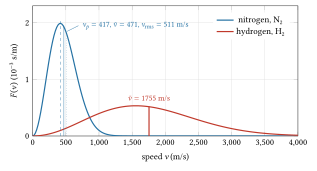
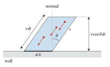
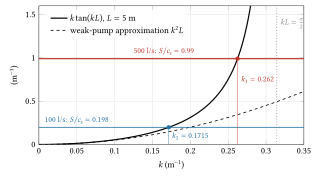
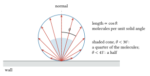
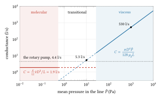
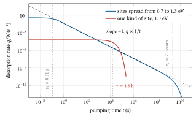
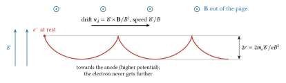
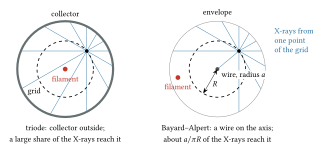
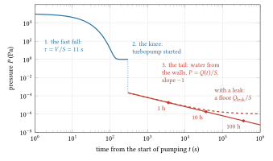

03 Vacuum
1643 to today: from Torricelli’s tube and Sprengel’s falling mercury to the pumps, gauges and coated chambers of the ISR and the LHC; the wall is the gas in the way of the beam.
Pre-requisites for this chapter.
- From Part 0, the chapter leans most on F6 Heat, gases and probability: section 10, the ideal gas (\(P = nk_BT\)), section 11, kinetic theory, section 13, the Boltzmann factor and the speeds of molecules, section 14, wall collisions and the mean free path, section 15, heat capacity, and for averages section 3, mean and variance and section 5, the Gaussian.
- From F1 Calculus: the exponential and the logarithm, integrals by substitution and by parts, Taylor series, partial derivatives, first differential equations and numbers on a computer.
- From F2 Vectors: the dot product, the cross product and spherical coordinates, for directions and solid angles. From F3 Mechanics: impulse and the reduced mass. From F4 Electromagnetism: Coulomb’s law, current and resistance (the model for conductance) and the magnetic force. From F7 Atoms and quanta: the electron-volt, photons, X-rays and the Bohr atom.
- Maxwell-Boltzmann distribution (continued): pressure from molecular impacts, partial pressures, Boyle’s law, molecular speeds, escape from a surface and vapour pressure; it builds on chapter 2.
- Mean free path and collision rates (continued): the viscosity and heat conduction of a gas, for the roughing line and the Pirani gauge; it builds on chapter 2.
- Ordinary differential equations (continued): exponential decay, the pump-down balance and the eigenvalue condition behind the pressure bump; it builds on chapter 2.
- Cross-section, rate and luminosity basics: the survival of a beam crossing gas, beam lifetime, and the ionisation cross-section behind ion gauges and the pressure bump.
- Gas flow regimes: the Knudsen number, the no-slip wall and Poiseuille flow in the roughing line.
- Diffusion and Fokker-Planck: Knudsen diffusion, the cosine law, and pressure profiles along pumped pipes.
- Relativistic motion in electric and magnetic fields (continued): the electron traps of the sputter-ion pump and the Penning gauge; it builds on chapter 1.
- Electrons in metals, Fermi-Dirac statistics, work function, with Richardson’s law in chapter 2, section 6: the hot filaments of ion gauges and residual gas analysers, whose emission current is set by the filament’s temperature.
- Photons and the photoelectric effect (continued): the soft X-rays and photoelectrons that set the X-ray limit of ion gauges; it builds on chapter 1.
A note on symbols in this chapter. Vacuum work has its own habits, and some of them clash with the course’s shared notation. Here \(P\) is a pressure (momentum does not appear); \(C\) is a conductance (no ring circumference appears); \(Q\) is a gas throughput in Pa m³/s, never a quality factor or a tune; \(q_A\) is an outgassing rate per unit area (not a charge); \(n\) is a number density of gas molecules (not a field index); \(\eta_i\) is an ion-induced desorption yield (not the phase-slip factor); \(\mu_g\) is the viscosity of a gas. \(V\) is a volume (not a voltage), \(S\) a pumping speed and \(D\) a pipe diameter (no dispersion appears). In the McLeod gauge \(g\) is the acceleration of gravity and \(h\) a length of mercury; in the outgassing model \(N\) is a number of molecules per unit area; in the pressure-bump calculation \(k\) is a wavenumber along the pipe in m⁻¹, not a quadrupole strength. Everything else follows the shared notation.
In one page
The wall. A charged particle crossing a gas hits molecules. Each hit can deflect it, slow it, change its charge or start a discharge. The hand pumps of the seventeenth and eighteenth centuries could not take a glass vessel low enough for cathode rays to cross it, and until 1950 no gauge could read below about \(10^{-8}\) Torr. After that the limit moved from the pump to the walls: metal surfaces give off gas, mostly water, for weeks.
The idea. Treat the gas as molecules, not as a fluid. At low pressure a molecule meets the wall far more often than another molecule. Then a pump is a hole the molecules wander into, a pipe is a resistance to wandering, and the pressure in a chamber is set by a balance: gas coming off the walls against the speed at which it is pumped.
Equations to remember.
\[ n = \frac{P}{k_B T}, \qquad \Phi = \frac{1}{4} n \bar v, \qquad \bar v = \sqrt{\frac{8 k_B T}{\pi m}} \]
\(n\) in m⁻³, \(P\) in Pa, \(T\) in K; \(\Phi\) the number of molecules striking a wall per m² per second; \(\bar v\) the mean molecular speed in m/s.
\[ \lambda = \frac{k_B T}{\sqrt{2}\,\pi d^2 P} \]
the mean free path of a molecule of diameter \(d\); for a fast electron it is at least \(4\sqrt 2\) times longer.
\[ C_{\mathrm{orifice}} = \frac{1}{4} \bar v A, \qquad P(t) = \frac{Q}{S} + \left(P_0 - \frac{Q}{S}\right) e^{-S t/V} \]
the conductance of a hole of area \(A\) in molecular flow, and the pump-down of a volume \(V\) by a pump of speed \(S\) (m³/s) against a gas load \(Q\) (Pa m³/s).
\[ \tau_{\mathrm{beam}} = \frac{1}{n \sigma v} \]
the time a beam particle of speed \(v\) survives in gas of density \(n\) when each collision with cross-section \(\sigma\) removes it.
Numbers worth knowing. 1 Torr = 133.3 Pa, 1 mbar = 100 Pa. At 20 °C a pascal holds \(2.47\times10^{20}\) molecules per m³. Air’s mean free path is about 6.7 mm at 1 Pa and kilometres at \(10^{-7}\) Pa. A clean surface at \(10^{-4}\) Pa of nitrogen is covered with a monolayer in about 3 s. A hole passes 11.6 l/s of air per cm² of its area. Unbaked metal gives off water at about \(3\times10^{-9}/t\) mbar l s⁻¹ cm⁻² with \(t\) in hours, so ten times lower pressure costs ten times more waiting, unless the chamber is baked. The LHC needs fewer than \(10^{15}\) hydrogen-equivalent molecules per m³ for a 100 h beam lifetime.
The wall
Torricelli made the first sustained vacuum in 1643, at the top of a glass tube of mercury inverted in a dish. Otto von Guericke built an air pump about 1650 and in 1654, at Regensburg, showed teams of horses failing to pull apart two evacuated copper hemispheres. Neither vacuum was empty: the space above Torricelli’s mercury holds mercury vapour at about 0.17 Pa at 20 °C, and piston pumps leaked past their seals at far higher pressures.
The physics that needed better vacuum began with discharges in tubes. A discharge in gas glows and carries current by ionising the gas (chapter 4); to see cathode rays themselves, the gas had to go. Hermann Sprengel, a chemist in London, described in 1865 a pump in which drops of mercury fell down a narrow glass tube, each trapping a pocket of gas and carrying it down. His first model took about 20 minutes to empty a half-litre vessel. William Crookes built Sprengel pumps into high-vacuum systems for his discharge tubes and his radiometer of 1875, and Edison’s lamps of 1879 were exhausted on a Crookes pattern. The limits were plain: the pump was slow, it filled the system with mercury vapour unless something froze it out, and every joint was glass, wax or grease. Herbert McLeod’s gauge of 1874 read pressure absolutely, from Boyle’s law, but one sample at a time.
Between 1905 and 1916 the pump changed. Wolfgang Gaede built a rotary mercury pump (1905), an oil-sealed rotary pump (1907), a molecular drag pump (1913) and the mercury diffusion pump (patented 1913, published 1915); Irving Langmuir at General Electric built his condensation pump in 1916. Gauges that read continuously came in 1906: Marcello Pirani’s heated wire and Voege’s thermocouple.
When accelerator builders arrived around 1930, vacuum was still a craft. Lawrence’s 27-inch cyclotron at Berkeley was sealed with wax. William Brobeck, who joined the laboratory in 1937, recalled that leaks were hunted by squirting illuminating gas (the coal gas of street lamps) at the wax while watching an ionisation gauge made from a radio valve (a small glass vacuum tube; an ionisation gauge reads pressure from the current of ions the gas makes, “How gauges work” below): where the gas got in through a leak, the reading jumped, and that when all else failed the crew would “flame the wax”, melting its surface over the whole tank. The 37-inch tank of 1937 used rubber gaskets instead. For a week the pressure stayed high and there was talk of going back to wax; in the second week the vacuum reached new lows. Brobeck gives no cause, but a slow first week followed by steady improvement is the signature of outgassing, gas given off by the inside surfaces of the chamber itself, the subject of half this chapter.
After the war the wall was the gauge. Triode ionisation gauges stopped reading near \(10^{-8}\) Torr however hard one pumped. Wayne Nottingham suggested in 1947 that the floor was X-rays inside the gauge, not gas; Bayard and Alpert confirmed it in 1950 and moved the floor down by a factor of about 500. Then the wall moved to the chamber walls, and to the beam. The CERN Intersecting Storage Rings (ISR), which first collided protons on 27 January 1971, ran at an average pressure in the low \(10^{-10}\) Torr range; yet as the stored current rose to a few amperes, the pressure at some points ran away and the beam was lost. The beam was making its own gas.
The physics
Pre-requisite (continued): Maxwell-Boltzmann distribution
Pre-requisite. This section gives you what kinetic theory says about a gas at rest in a vessel: why its pressure is \(nk_BT\), how partial pressures add, Boyle’s law, the distribution of molecular speeds and its mean, the relative speed of two molecules, the rate at which a molecule escapes from a surface, and why a vapour pressure falls so steeply with temperature. The sections from “Pressure, units and number density” to “Outgassing” use all of it, and the McLeod gauge uses Boyle’s law. Taught from Landau and Lifshitz, Statistical Physics Part 1, §29 (the Maxwellian distribution), §39 (impacts on a wall, the relative velocity of two molecules) and §82 (the Clapeyron–Clausius formula); Tong, Fluid Mechanics, §6.1, 6.1.1 and 6.1.2; O’Hanlon, §2.1, 2.2.1, 2.2.4, 4.1 and 4.2.1.
Chapter 2 taught the Boltzmann factor and the Maxwellian distribution of momenta (Maxwell-Boltzmann distribution); here the same law is applied to the molecules of a gas. Part 0 already gave the ideal gas law, the pressure of a box of molecules and the three speeds of the Maxwellian (F6 sections 10, 11 and 13); this section derives them again from one velocity component, for a wall of any shape, and adds what vacuum work needs.
One velocity component. A molecule of mass \(m\) with velocity component \(v_z\) has kinetic energy \(\tfrac12 m v_z^2\) in that direction. The Boltzmann factor makes the fraction of molecules with \(v_z\) between \(v_z\) and \(v_z + dv_z\)
\[ f(v_z)\,dv_z = \sqrt{\frac{m}{2\pi k_B T}}\; e^{-m v_z^2/2k_B T}\,dv_z \]
The square root in front makes \(\int f\,dv_z = 1\): the Gaussian integral \(\int_{-\infty}^{\infty} e^{-x^2/2\sigma^2}dx = \sqrt{2\pi}\,\sigma\), with \(\sigma^2 = k_BT/m\) (F6 section 5). This is a Gaussian centred on zero, with variance (the mean square, since the mean is zero; F6 section 3)
\[ \langle v_z^2\rangle = \frac{k_B T}{m} \]
so each direction holds \(\tfrac12 k_BT\) of kinetic energy on average. The same holds for \(v_x\) and \(v_y\), and the three are independent: the energy is a sum of three terms, and the Boltzmann factor of a sum is a product. For nitrogen at 20 °C, \(\sqrt{k_BT/m} = 295\) m/s, a typical speed along any one axis.
Pressure. Put a wall of area \(A\) across the \(z\) axis. In a time \(dt\) the molecules with \(z\)-velocity near \(v_z > 0\) that reach it are those within a distance \(v_z\,dt\) of it, \(n f(v_z)\,dv_z \cdot A v_z\,dt\) of them, with \(n\) the number density in m⁻³. Each leaves with \(-v_z\), so the wall receives momentum \(2mv_z\) from each. Force per unit area is momentum per unit time per unit area:
\[ P = \int_0^\infty 2 m v_z \cdot n v_z f(v_z)\,dv_z = n m \int_{-\infty}^{\infty} v_z^2 f(v_z)\,dv_z = n m\langle v_z^2\rangle = n k_B T \]
The second step uses the symmetry of \(f\): the integral over positive \(v_z\) is half the integral over all. A real wall does not reflect each molecule like a mirror; it holds it briefly and lets it go in a random direction. In equilibrium the molecules leaving carry, on average, the momentum of those arriving, so the result stands. The approximations are that the molecules exert no forces on one another between collisions and take up no volume. Both get better as the pressure falls, which is why the ideal gas law is exact for practical purposes in vacuum. At work: the LHC asks for at most \(10^{15}\) hydrogen molecules per m³. On its beam screen at 5 K that density is a pressure \(nk_BT = 6.9\times10^{-8}\) Pa; at 20 °C it would read \(4.0\times10^{-6}\) Pa.
Partial pressures. In a mixture each species strikes the wall independently, and the momenta add:
\[ P = \sum_i n_i k_B T = \sum_i P_i \]
with \(P_i = n_ik_BT\) the partial pressure of species \(i\) (Dalton’s law). Dry air at 101 325 Pa is 79.1 kPa of nitrogen, 21.2 kPa of oxygen and 0.94 kPa of argon. A residual gas analyser measures the \(P_i\) one by one; a total-pressure gauge reports a sum weighted by its sensitivity to each gas; the beam meets the \(n_i\).
Boyle’s law. A fixed number \(N\) of molecules in a volume \(V\) has \(n = N/V\), so \(PV = Nk_BT\). At fixed temperature
\[ P_1 V_1 = P_2 V_2 \]
Squeeze the gas into a smaller volume and its pressure rises in proportion. At work: a McLeod gauge traps a 200 ml sample and squeezes it into 1 cm of a capillary of 1 mm bore, a volume of \(7.85\times10^{-9}\) m³. The volume falls by a factor of 25 500, so a sample at 0.052 Pa ends at 1330 Pa, enough to hold up a column of mercury 1 cm high: readable by eye. The law needs the temperature to stay fixed (compress slowly) and nothing to condense, which is why a McLeod gauge misses water.
The speed distribution. Picture each molecule’s velocity \((v_x, v_y, v_z)\) as a point in a space whose three axes are the velocity components, “velocity space”; the molecule’s speed \(v\) is that point’s distance from the origin. The three Gaussians multiply to a distribution over velocity that depends only on \(v^2 = v_x^2 + v_y^2 + v_z^2\): no direction is preferred. The velocities with speed between \(v\) and \(v + dv\) fill a spherical shell of volume \(4\pi v^2\,dv\) in velocity space, so the fraction of molecules with speed in \(dv\) is
\[ F(v)\,dv = 4\pi v^2 \left(\frac{m}{2\pi k_B T}\right)^{3/2} e^{-m v^2/2k_B T}\,dv \]
with \(\int_0^\infty F\,dv = 1\). The mean speed is its first moment. Write \(a = m/2k_BT\) and use \(\int_0^\infty v^3 e^{-a v^2}\,dv = 1/(2a^2)\) (substitute \(s = v^2\), so \(v^3\,dv = \tfrac12 s\,ds\), and \(\int_0^\infty s\,e^{-as}\,ds = 1/a^2\) by integration by parts; F1 section 7). Since \((m/2\pi k_BT)^{3/2} = (a/\pi)^{3/2}\), and \(4\pi(a/\pi)^{3/2}/(2a^2) = 2a^{3/2}/(\sqrt\pi\,a^2) = 2/\sqrt{\pi a}\),
\[ \bar v = \int_0^\infty v\,F(v)\,dv = 4\pi\left(\frac{a}{\pi}\right)^{3/2}\frac{1}{2a^2} = \frac{2}{\sqrt{\pi a}} = \sqrt{\frac{8k_BT}{\pi m}} \]
The peak of \(F\), the most probable speed, is at \(\sqrt{2k_BT/m}\), and the root mean square speed is \(\sqrt{3k_BT/m}\); the mean is 1.128 times the peak and the rms 1.225 times. For nitrogen at 20 °C these are 417, 471 and 511 m/s (figure 3.1). The distribution is broad: 1.7 % of the molecules move faster than \(2\bar v\). In vacuum work the mean speed is the one that matters, because the number of molecules crossing a surface goes as their speed: it sets the rate at which a wall is struck and the conductance of a hole.

Figure 3.1. The distribution of molecular speeds \(F(v)\) at 20 °C for nitrogen and hydrogen, computed from the formula above. Each curve has area 1. Hydrogen, fourteen times lighter, is \(\sqrt{14}\) = 3.7 times faster and its curve is that much wider and lower. For nitrogen the most probable, mean and rms speeds are marked (dashed, solid, dotted).
The relative speed of two molecules. Two molecules drawn independently from the same gas have relative velocity \(\mathbf w = \mathbf v_1 - \mathbf v_2\). Each component of \(\mathbf w\) is the difference of two independent Gaussians of variance \(k_BT/m\). The variances of independent quantities add (F6 section 3), so it is a Gaussian of variance \(2k_BT/m\): a Maxwellian with \(m\) replaced by \(m/2\), the reduced mass \(m_1m_2/(m_1+m_2)\) of the pair (F3 section 6; Landau and Lifshitz, §39). The mean relative speed is therefore
\[ \bar w = \sqrt{\frac{8k_BT}{\pi m/2}} = \sqrt 2\,\bar v \]
A numerical check, drawing a million pairs of nitrogen velocities, gives \(\bar w/\bar v = 1.414\). For unlike molecules of masses \(m_1\) and \(m_2\), replace \(m/2\) by \(m_1m_2/(m_1+m_2)\). For a particle much faster than the molecules, an electron of a few keV or a beam proton, the relative speed is simply its own speed. The mean free path of a molecule below uses \(\sqrt2\,\bar v\); that of a fast electron uses its own \(v\).
Escape over an energy barrier. A molecule held on a surface with binding energy \(E_d\) vibrates in its site about \(10^{13}\) times a second. It leaves when a vibration happens to carry energy \(E_d\) along the way out. By the Boltzmann factor, the fraction of attempts with that much energy is about \(e^{-E_d/k_BT}\). So the rate of escape is about \(10^{13}e^{-E_d/k_BT}\) per second, and the mean time a molecule stays on the surface (its sojourn time) is
\[ \tau = \tau_0\,e^{E_d/k_BT}, \qquad \tau_0 \approx 10^{-13}\ \mathrm s \]
This is the Arrhenius form; O’Hanlon (§4.2.1) uses it with the same \(\tau_0\). It is an estimate, and the prefactor is uncertain by perhaps a factor of ten. The exponential is what matters. At 20 °C, \(k_BT = 0.0253\) eV, and every extra 0.1 eV of binding multiplies \(\tau\) by 52:
| \(E_d\) (eV) | \(\tau\) at 20 °C | \(\tau\) at 150 °C | speed-up from heating |
|---|---|---|---|
| 0.3 | 14 ns | 0.37 ns | 38 |
| 0.5 | 39 µs | 90 ns | 440 |
| 0.76 | 1.2 s | 0.11 ms | \(1.0\times10^4\) |
| 1.0 | 4.3 h | 0.08 s | \(1.9\times10^5\) |
| 1.2 | 1.4 years | 20 s | \(2.2\times10^6\) |
A molecule bound by 0.3 eV leaves at once and does not trouble a vacuum system. One bound by 1.2 eV stays for years at room temperature and leaves in seconds at 150 °C. Water on metal lies in between, which is why it dominates unbaked systems and why baking works (“Outgassing”, below).
Vapour pressure. A liquid or solid in a closed vessel loses molecules from its surface and gains them back from its vapour; in equilibrium the two rates are equal. The arrivals go as the vapour pressure (the number striking a surface each second is proportional to \(P\), as “How often molecules hit a wall” shows below). The departures need a molecule to gain the energy \(\varepsilon_v\) that binds it to its neighbours, so they go as \(e^{-\varepsilon_v/k_BT}\). The vapour pressure therefore rises and falls nearly as \(e^{-\varepsilon_v/k_BT}\). Take the logarithm, \(\ln P \approx \text{const} - \varepsilon_v/k_BT\), and differentiate with respect to \(T\): the slope is \(d\ln P/dT = \varepsilon_v/k_BT^2\). The prefactor was a guess, but thermodynamics shows the slope is exact. Treating the vapour as an ideal gas and neglecting the volume of the condensed phase beside that of the vapour, Landau and Lifshitz (§82) derive the Clapeyron–Clausius formula,
\[ \frac{d\ln P}{dT} = \frac{\varepsilon_v}{k_B T^2} \]
with \(\varepsilon_v\) the heat taken up per molecule on evaporation (or on sublimation, from a solid). If \(\varepsilon_v\) is roughly constant, separate the variables, \(d\ln P = (\varepsilon_v/k_B)\,dT/T^2\), and integrate from a known point \((T_{\mathrm{ref}}, P_{\mathrm{ref}})\), using \(\int dT/T^2 = -1/T\):
\[ P(T) = P_{\mathrm{ref}}\exp\left[-\frac{\varepsilon_v}{k_B}\left(\frac1T - \frac1{T_{\mathrm{ref}}}\right)\right] \]
At work. Ice sublimes with \(\varepsilon_v = 0.53\) eV (51 kJ/mol), and its vapour pressure at 0 °C is 612 Pa. The formula then gives 0.16 Pa at 200 K, \(5.7\times10^{-6}\) Pa at 150 K and \(1.6\times10^{-9}\) Pa (\(1.6\times10^{-11}\) mbar) at 125 K; near 125 K each 10 K of cooling divides it by about 50. A wall at 125 K holds its water, as the outgassing section says, and one at 77 K, cooled by liquid nitrogen, holds it completely. Mercury, with \(\varepsilon_v = 0.64\) eV and 0.171 Pa at 20 °C, falls by the formula to 0.027 Pa at 0 °C and to about \(5\times10^{-7}\) Pa at −78 °C (solid carbon dioxide); in a trap at 77 K the formula gives a number so small it means none. Extrapolating over two hundred kelvin with a constant \(\varepsilon_v\) is rough, but the exponential is so steep that the conclusion does not depend on it.
Exercise A1. A McLeod gauge has a 100 ml bulb and a capillary of 0.5 mm bore. The gas is squeezed into 2 cm of capillary. What was the pressure, and by what factor was the gas compressed? (The compressed gas holds up a column of mercury as long as itself, so its pressure is \(P + \rho_{\mathrm{Hg}}gh\), with \(\rho_{\mathrm{Hg}} = 13\,534\) kg/m³ the density of mercury and \(h\) = 2 cm; “How gauges work” below draws this out.)
Answer
The bore area is \(a = \pi(0.25\times10^{-3})^2 = 1.96\times10^{-7}\) m². Boyle’s law with \(P \ll \rho_{\mathrm{Hg}}gh\) gives \(P = \rho_{\mathrm{Hg}}g a h^2/V = 13\,534\times9.81\times1.96\times10^{-7}\times0.02^2/10^{-4} = 0.104\) Pa. The volume fell by \(V/(ah) = 25\,500\), and the compressed gas is at \(0.104\times25\,500 = 2650\) Pa, which is \(\rho_{\mathrm{Hg}}gh\) for a 2 cm column, as it must be.
Exercise A2. Find the mean relative speed of a hydrogen molecule and a nitrogen molecule at 20 °C, and compare it with the mean speed of hydrogen alone. Why are the two so close?
Answer
The reduced mass is \(2.016\times28.01/30.03 = 1.880\) u, so \(\bar w = \sqrt{8k_BT/(\pi\times1.881\ \mathrm u)} = 1817\) m/s, against 1755 m/s for hydrogen. The nitrogen molecule is heavy and slow, so the hydrogen’s own motion is nearly all of the relative motion; the reduced mass is close to the lighter mass.
Exercise A3. With \(\tau_0 = 10^{-13}\) s, what binding energy gives a sojourn time of one day at 20 °C, and at 150 °C? What does this say about a one-day bake?
Answer
\(E_d = k_BT\ln(86\,400/\tau_0) = k_BT\times41.30\). At 20 °C, \(k_BT = 0.0253\) eV and \(E_d = 1.04\) eV; at 150 °C, \(k_BT = 0.0365\) eV and \(E_d = 1.51\) eV. A day at room temperature empties the sites up to about 1.04 eV; a day at 150 °C empties them up to about 1.5 eV. Water held by less than that is gone, and the deeper sites that remain give off gas far too slowly to matter.
Exercise A4. By what factor does the vapour pressure of ice fall between 125 K and 110 K? Is a cryopump panel at 110 K cold enough to hold water below \(10^{-10}\) Pa?
Answer
The formula gives \(2.0\times10^{-12}\) Pa at 110 K against \(1.6\times10^{-9}\) Pa at 125 K, a factor of about 800 for 15 K. At 110 K the water’s own vapour pressure is 50 times below \(10^{-10}\) Pa, so yes.
Pressure, units and number density
Pressure is the force per unit area of molecules bouncing off a wall. The SI unit is the pascal; vacuum work also uses the millibar (1 mbar = 100 Pa) and the torr (1 Torr = 1 mm of mercury = 101 325/760 Pa = 133.32 Pa). So 1 Pa = \(7.50\times10^{-3}\) Torr = \(10^{-2}\) mbar. For a dilute gas the ideal gas law holds molecule by molecule,
\[ P = n k_B T \]
with \(n\) the number density (m⁻³), \(k_B = 1.380649\times10^{-23}\) J/K and \(T\) in K. It fails for dense gases, not thin ones, so in vacuum it is exact for practical purposes. At 20 °C, \(n = 2.47\times10^{25}\) m⁻³ at \(10^5\) Pa, \(2.47\times10^{20}\) at 1 Pa and \(2.47\times10^{13}\) at \(10^{-7}\) Pa (\(10^{-9}\) mbar): ultra-high vacuum still holds 25 million molecules per cubic centimetre. In a mixture each species adds its partial pressure, \(P = k_B T\sum_i n_i\). Since the beam meets molecules, not pressure, the LHC states its requirement as a density: its beam pipe is at a few kelvin, where a given density means a far smaller pressure.
The speeds of molecules
In equilibrium the velocities follow the Maxwell distribution (Landau and Lifshitz, Statistical Physics Part 1, §29). Its mean speed is
\[ \bar v = \sqrt{\frac{8 k_B T}{\pi m}} \]
with \(m\) the mass of one molecule. At 20 °C: hydrogen 1755 m/s, helium 1245 m/s, water 587 m/s, nitrogen 471 m/s, air 463 m/s, argon 394 m/s. Light molecules are fast, which is why hydrogen is hard to pump with a turbine and why helium is the gas for finding leaks.
How often molecules hit a wall
Take a small piece of wall of area \(dA\) with its normal along \(z\). In time \(dt\) the molecules with velocity \(\mathbf v\) that strike it are those inside a slanted cylinder of base \(dA\) and length \(v\,dt\), whose volume is \(v_z\,dt\,dA\), with \(v_z > 0\) pointing at the wall. (Figure 3.2 shows it from the side.) A solid angle is the three-dimensional version of an angle: the area that a cone of directions cuts from a sphere of radius 1, so all directions together make \(4\pi\). In spherical coordinates (F2 section 13) a small patch of directions, \(d\theta\) by \(d\varphi\), has \(d\Omega = \sin\theta\,d\theta\,d\varphi\). The distribution is isotropic (the same in every direction), so write the fraction of molecules with speed in \(dv\) and direction in solid angle \(d\Omega\) as \(F(v)\,dv\,d\Omega/4\pi\), with \(\int F\,dv = 1\) and \(\int v F\,dv = \bar v\). With \(\theta\) the angle from the normal, \(v_z = v\cos\theta\), and the number of hits per unit area per unit time is
\[ \begin{aligned} \Phi &= n \int_0^\infty v F(v)\,dv \;\frac{1}{4\pi}\int_0^{2\pi} d\varphi \int_0^{\pi/2} \cos\theta \sin\theta\, d\theta \\ &= n \bar v \cdot \frac{1}{4\pi} \cdot 2\pi \cdot \frac{1}{2} = \frac{1}{4} n \bar v . \end{aligned} \]
The \(\theta\) integral is \(\int_0^1 c\,dc = \tfrac12\) with \(c = \cos\theta\) (substitution, \(dc = -\sin\theta\,d\theta\)). Putting in \(\bar v\) and \(n = P/k_B T\), and using \(\tfrac14\sqrt{8/\pi} = 1/\sqrt{2\pi}\), gives the form found in vacuum texts:
\[ \Phi = \frac{P}{\sqrt{2\pi m k_B T}} \]
Landau and Lifshitz derive the same result in Statistical Physics Part 1, §39 (equation 39.2). It assumes only equilibrium and an isotropic distribution at the wall; it fails in a beam of molecules, or in a jet.
The factor 1/4 has two parts: half the molecules move away from the wall, and those moving towards it do so on average at \(\bar v/2\) along the normal. F6 section 14 found the same result by slicing a sphere, without the integral.

Figure 3.2. Side view of the slanted cylinder. Molecules moving with velocity \(\mathbf v\) at angle \(\theta\) to the normal reach the patch \(dA\) within a time \(dt\) if they start inside it. Its slant length is \(v\,dt\), but its height above the wall is only \(v\cos\theta\,dt\), so its volume is \(v\cos\theta\,dt\,dA\): molecules arriving at a slant count for less.
Worked number. Nitrogen at \(10^{-4}\) Pa and 20 °C: \(\Phi = 2.9\times10^{18}\) m⁻² s⁻¹.
The monolayer time
A clean surface holds about \(10^{15}\) molecules per cm², that is \(N_s \approx 10^{19}\) m⁻², in one layer (the figure used at CERN; Baglin 2024). If every molecule that arrives sticks, the time to cover a clean surface is
\[ t_{\mathrm{mono}} = \frac{N_s}{\Phi} \]
For nitrogen at 20 °C this is 3.4 ns at atmospheric pressure, 0.34 ms at 1 Pa, 3.4 s at \(10^{-4}\) Pa and about an hour at \(10^{-7}\) Pa. A getter surface (a reactive metal that binds gas chemically; “How pumps work” below), which does make every arriving molecule stick, therefore saturates. Worked number. The getter-coated beam pipe at the CMS experiment, 10 m long and 10 cm across, has 3.1 m² of wall, room for about \(3\times10^{19}\) molecules; a single millibar-litre of gas holds \(2.5\times10^{19}\). One accidental puff saturates it, as Baglin warns.
Pre-requisite (continued): Mean free path and collision rates
Pre-requisite. This section adds to chapter 2’s mean free path the two transport properties that kinetic theory explains with it: viscosity, which is momentum carried across a gas, and heat conduction, which is energy carried across it. It shows why both are independent of pressure while the free path is short, and why heat conduction becomes proportional to pressure when the free path is long. The next section uses the viscosity to check the size of a molecule; “Viscous flow, for the roughing line” uses the viscosity, and “How gauges work” uses heat conduction for the Pirani gauge. Taught from Tong, Fluid Mechanics, §6.1.2 to 6.1.4; O’Hanlon, §2.3.1, 2.3.2 and 5.2.1; Landau and Lifshitz, Statistical Physics, §39 (problem 3, the energy molecules carry to a wall).
Chapter 2 (Mean free path and collision rates) gave the number density \(n = P/k_BT\), the hard-sphere cross-section \(\sigma = \pi d^2\), the mean free path \(\lambda = 1/(n\sigma)\) with its factor \(\sqrt2\) for molecules among moving molecules, and the survival probability \(e^{-L/\lambda}\). In short: a particle moving at speed \(v\) through targets at rest collides \(n\sigma v\) times a second, and its mean free path is its speed divided by that rate.
Viscosity. Put gas between two parallel plates a distance \(h\) apart and slide the top plate along \(x\) at speed \(U\). The gas next to each plate moves with it, and in between the flow velocity \(u\) rises steadily from 0 to \(U\). Keeping the top plate moving needs a force per unit area
\[ \frac{F}{A} = \mu_g \frac{du}{dy} \]
with \(y\) across the gap and \(\mu_g\) the viscosity in Pa s. This defines the viscosity; kinetic theory explains it.
Viscosity from molecules. Take a flow \(u(y)\) along \(x\), slow compared with \(\bar v\), and look at the plane \(y = y_0\). Molecules cross it in both directions. One that crosses at angle \(\theta\) to the \(+y\) axis made its last collision about a free path back, at height \(y_0 - \lambda\cos\theta\), and it carries the flow momentum of that height, \(m\,u(y_0 - \lambda\cos\theta) \approx m[u(y_0) - \lambda\cos\theta\,du/dy]\) (the first two terms of a Taylor series, F1 section 8). The number crossing unit area per second with speed in \(dv\) and direction in the solid angle \(d\Omega\) is \(n\,vF(v)\,dv\,\cos\theta\,d\Omega/4\pi\), with \(F\) the speed distribution of the previous Maxwell–Boltzmann section; for \(\theta > \pi/2\) the molecule crosses downwards and \(\cos\theta\) counts it with a minus sign. The net \(x\)-momentum carried upwards across unit area per second is then
\[ \begin{aligned} \Pi &= \int_0^\infty n\,vF(v)\,dv \int \cos\theta\; m\left[u(y_0) - \lambda\cos\theta\,\frac{du}{dy}\right]\frac{d\Omega}{4\pi} \\ &= -\,n m \bar v \lambda\,\frac{du}{dy}\int \cos^2\theta\,\frac{d\Omega}{4\pi} = -\frac13\,n m\bar v\lambda\,\frac{du}{dy} \end{aligned} \]
The term in \(u(y_0)\) vanishes because as many molecules cross up as down, and \(\int\cos^2\theta\,d\Omega/4\pi = 1/3\) over the whole sphere (with \(d\Omega = 2\pi\sin\theta\,d\theta\) after the \(\varphi\) integral, and \(c = \cos\theta\), it is \(\tfrac{1}{4\pi}\int_{-1}^{1}2\pi c^2\,dc = \tfrac12\cdot\tfrac23\)). Momentum flows from the fast layers to the slow ones; that flow is the viscous stress. Comparing with the definition,
\[ \mu_g \approx \frac13\,n m \bar v \lambda \]
Now put in \(\lambda = 1/(\sqrt2\,n\pi d^2)\):
\[ \mu_g \approx \frac{m\bar v}{3\sqrt2\,\pi d^2} \]
The density has cancelled. At fixed temperature the viscosity of a gas does not depend on its pressure. Halve the density and half as many molecules carry momentum across, but each comes from twice as far and brings twice the difference. Maxwell predicted this, was surprised by it, and measured it (Tong tells the story). Viscosity grows as \(\sqrt T\), through \(\bar v\).
The argument cheats twice: it gives every molecule the same free path, and it assumes each carries exactly the flow of its last collision. The full solution of the kinetic equations for hard spheres (by Chapman and Enskog; quoted here, not derived) gives
\[ \mu_g = \frac{5}{16}\,\frac{\sqrt{\pi m k_B T}}{\pi d^2} \]
which is 1.47 times the simple estimate. At work: for air, \(m = 28.97\) u and \(d = 3.7\times10^{-10}\) m give \(1.22\times10^{-5}\) Pa s from the estimate and \(1.80\times10^{-5}\) Pa s from the full formula; the measured value is \(1.8\times10^{-5}\) Pa s. In practice the formula is read backwards: the measured viscosity defines the diameter of a molecule treated as a hard sphere, and that is where the chapter’s \(d\) comes from. Both formulas need the free path to be short compared with the gap. If the plates are closer than a free path, molecules fly from plate to plate without meeting each other, and the drag is proportional to the number arriving, that is, to the pressure (O’Hanlon §2.3.1).
Heat conduction. Replace the moving plate by a hot one. A molecule crossing the plane now carries the energy \(\varepsilon(T)\) of its last collision, and the same integral gives a heat flux
\[ J_E = -\frac13\,n\bar v\lambda\,c_1\,\frac{dT}{dy} = -\kappa_g\frac{dT}{dy} \]
with \(J_E\) in W/m², \(c_1 = d\varepsilon/dT\) the heat capacity per molecule (\(\tfrac52 k_B\) for nitrogen or oxygen at room temperature: \(\tfrac12 k_B\) for each of three directions of motion and two of rotation, by equipartition; F6 sections 11 and 15), and \(\kappa_g\) the thermal conductivity in W/(m K). Again \(n\lambda\) is fixed, so while the free path is short the conductivity does not depend on pressure. The simple estimate is cruder here than for viscosity (for air it gives 0.009 W/(m K) against a measured 0.026), because the fast molecules both carry more energy and travel farther; the independence of pressure survives.
Heat conduction at low pressure. When the free path is longer than the gap, molecules leave a hot wire at \(T + \Delta T\) and reach the cold wall without a collision. The heat carried is then the number striking the wire per second times the extra energy each takes away. The number striking unit area per second is \(\tfrac14 n\bar v\) (“How often molecules hit a wall”, above). For the energy: molecules striking a wall carry on average \(2k_BT\) of kinetic energy, not \(\tfrac32 k_BT\), because the fast ones strike more often (Landau and Lifshitz, §39, problem 3). The flux weights each speed by \(v\), so the mean energy carried is \(\int\tfrac12mv^2\,vF\,dv\big/\int vF\,dv\). With \(a = m/2k_BT\) as before, \(\int_0^\infty v^5e^{-av^2}dv = 1/a^3\) and \(\int_0^\infty v^3e^{-av^2}dv = 1/(2a^2)\) (both by \(s = v^2\)), so the ratio is \(\tfrac12m\cdot(2/a) = m/a = 2k_BT\). With \(k_BT\) of rotation for a diatomic molecule, one that leaves fully warmed to the wire’s temperature takes away \(3k_B\Delta T\) more than it brought. Only a fraction \(\alpha\) of the molecules (the accommodation coefficient, between 0 and 1) come into equilibrium with the wire, so the heat flux is
\[ J_E = \alpha\,\frac{P\bar v}{4k_BT}\,3k_B\,\Delta T = \alpha\,\Lambda_0\,P\,\Delta T, \qquad \Lambda_0 = \frac{3\bar v}{4T} \]
For air at 20 °C, \(\Lambda_0 = 1.18\) W m⁻² K⁻¹ Pa⁻¹. Now the heat carried is proportional to the pressure; this is the working range of a Pirani gauge (a heated wire whose loss of heat to the gas is read as a pressure; “How gauges work” below). The two regimes meet where \(\alpha\Lambda_0P\Delta T = \kappa_g\Delta T/g\), with \(g\) the gap: for \(g = 1\) mm and \(\alpha = 1\) that is 22 Pa, where the free path is 0.3 mm. Above it the reading flattens and the gauge goes blind; a smaller gap moves the top of the range up (O’Hanlon §2.3.2). At work: a wire 10 µm across and 5 cm long, 100 K above its surroundings, with \(\alpha = 0.8\), gives 0.15 mW to air at 1 Pa and 1.5 µW at \(10^{-2}\) Pa. At the lower pressure this is a small change on top of the heat the wire radiates and loses through its supports, which do not depend on pressure; that sets the bottom of the Pirani’s range.
Exercise B1. The measured viscosity of hydrogen at 20 °C is about \(8.8\times10^{-6}\) Pa s. Find its hard-sphere diameter and its mean free path at 1 Pa.
Answer
From \(\mu_g = \tfrac{5}{16}\sqrt{\pi mk_BT}/(\pi d^2)\) with \(m = 2.016\) u: \(d^2 = \tfrac{5}{16}\sqrt{\pi mk_BT}/(\pi\mu_g)\), so \(d = 2.72\times10^{-10}\) m. Then \(\lambda = k_BT/(\sqrt2\,\pi d^2P) = 12\) mm at 1 Pa, nearly twice air’s 6.7 mm, because the molecule is smaller.
Exercise B2. Between plates 1 mm apart in air at 20 °C, below roughly what pressure does the viscous drag stop being independent of pressure, and how does it behave below that?
Answer
The formula needs \(\lambda\) well below the gap. \(\lambda = 1\) mm when \(P = 6.7\times10^{-3}/10^{-3} = 6.7\) Pa, so from a few tens of pascals downwards the drag departs from the viscous value, and well below 6.7 Pa it falls in proportion to the pressure, since each molecule then carries momentum straight from plate to plate.
Exercise B3. A Pirani gauge calibrated for air reads hydrogen in its working range. At the same pressure, roughly how much more heat does hydrogen carry from the wire, and why is the real correction smaller?
Answer
Both are diatomic, so each molecule takes \(3k_B\Delta T\) and \(\Lambda_0 \propto \bar v\). The ratio of mean speeds is \(1755/463 = 3.8\), so hydrogen carries about 3.8 times the heat and the gauge reads high. The accommodation coefficient of hydrogen on a clean metal is low (a light molecule bounces off without sharing much energy), which pulls the factor down; the real correction comes from the maker’s tables.
The mean free path of a molecule
(F6 section 14 gave this first; here it is again with its numbers for vacuum work.) A molecule of diameter \(d\) hits another whenever their centres come within \(d\), so it sweeps out a cross-section \(\sigma = \pi d^2\). If the others stood still, a molecule moving at \(\bar v\) would make \(n\sigma\bar v\) collisions per second. They do not stand still: for two molecules drawn from the same Maxwell distribution, the mean relative speed is \(\sqrt 2\,\bar v\) (the relative velocity of two independent Gaussian velocities has twice the variance). The collision rate is \(\nu = \sqrt 2 n\sigma \bar v\), and the mean distance between collisions is
\[ \lambda = \frac{\bar v}{\nu} = \frac{1}{\sqrt 2\, n \pi d^2} = \frac{k_B T}{\sqrt 2\, \pi d^2 P} \]
For air the effective diameter is about \(d = 3.7\times10^{-10}\) m. (As a check, the hard-sphere viscosity formula of kinetic theory, \(\mu_g = \tfrac{5}{16}\sqrt{\pi m k_B T}/(\pi d^2)\), gives \(1.80\times10^{-5}\) Pa s with this \(d\), close to the measured value for air of about \(1.8\times10^{-5}\) Pa s.) At 20 °C:
| \(P\) | \(\lambda\) for air |
|---|---|
| 101 325 Pa | 66 nm |
| 1 Pa | 6.7 mm |
| \(10^{-3}\) Pa | 6.7 m |
| \(10^{-7}\) Pa | 67 km |
The product \(\lambda P\) is constant, about \(6.7\times10^{-3}\) Pa m for air at 20 °C (the CERN tables round it to 7 mm at 1 Pa). The hard-sphere model is fair for molecules meeting molecules at thermal energies, not for fast particles.
Pre-requisite (continued): Ordinary differential equations (linear, constant and varying coefficients)
Pre-requisite. This section gives you three equations that run through this chapter: the decay \(dN/dx = -N/\lambda\); the balance \(V\,dP/dt = Q - SP\), with its steady state and its time constant; and the equation \(P'' + k^2P = 0\) with a condition at each end, which has solutions only for special values of \(k\). The next section and “The mean free path of a fast electron” use the first for the survival of a beam, “The pump-down equation” the second, and “Vacuum for beams” the third for the pressure bump. Taught from Tong, Classical Mechanics, §2.5.3 (terminal velocity, which obeys the same first-order equation), and Tong, Fluid Mechanics, §7.1.2 (diffusion on a finite interval, where conditions at both ends select the allowed solutions).
Chapter 2 (Ordinary differential equations) solved a nonlinear equation by a first integral and the linear focusing equation \(r'' = -K(z)r\). Part 0 solved the decay equation and showed how to separate the variables (F1 section 10). Here the equations are linear with constant coefficients; what is new is a constant source term, and conditions set at two different points.
Decay in proportion to what is left. Suppose a quantity \(N(x)\) loses a fixed fraction of itself per unit length:
\[ \frac{dN}{dx} = -\frac{N}{\lambda} \]
with \(\lambda\) a constant length. Separate the variables, \(dN/N = -dx/\lambda\), and integrate: \(\ln N = -x/\lambda + \text{const}\), so
\[ N(x) = N(0)\,e^{-x/\lambda} \]
\(N\) falls by a factor \(e\) in each length \(\lambda\) and halves in \(\lambda\ln 2\). The same equation in time, \(dN/dt = -N/\tau\), describes anything lost at a fixed rate per member: particles scattering out of a beam, molecules leaving a surface. Only the ratio of loss to amount enters, so a beam of a thousand particles and one of \(10^{13}\) decay alike.
A balance with a source. A chamber of volume \(V\) (m³) receives gas at a constant throughput \(Q\) (Pa m³/s) and loses it to a pump of speed \(S\) (m³/s):
\[ V\frac{dP}{dt} = Q - SP \]
First find where it stops changing: \(dP/dt = 0\) at \(P_\infty = Q/S\). Then follow the distance from there, \(u = P - Q/S\). Since \(Q/S\) is a constant, \(du/dt = dP/dt\), and the equation becomes \(V\,du/dt = -Su\): the decay above, with solution \(u = u(0)\,e^{-t/\tau}\). Putting \(P\) back,
\[ P(t) = \frac{Q}{S} + \left(P_0 - \frac{Q}{S}\right)e^{-t/\tau}, \qquad \tau = \frac{V}{S} \]
Any first-order linear equation with a constant source does this: it relaxes exponentially to its steady state, with a time constant equal to the capacity divided by the rate of removal. A stone sinking through a viscous fluid obeys \(m\,dv/dt = mg - \gamma v\) and approaches its terminal velocity \(mg/\gamma\) in the same way (Tong). Three special cases cover vacuum practice.
- No pump (\(S = 0\), valve closed): \(V\,dP/dt = Q\), and the pressure rises in a straight line, \(P = P_0 + Qt/V\). This is the rate-of-rise test.
- No load (\(Q = 0\)): a pure exponential, and the time to fall from \(P_0\) to \(P_1\) is \(\tau\ln(P_0/P_1)\). A 200 l chamber on a 40 m³/h rotary pump has \(\tau = 18\) s and falls from atmosphere to 10 Pa in 166 s, before the walls take over.
- A slowly changing load. If \(Q\) changes over times much longer than \(\tau\), the pressure keeps up with it: \(P(t) \approx Q(t)/S\) at every moment. For a load \(Q = A/t\), try \(P = (A/St)(1 + \epsilon)\) with \(\epsilon\) small; substituting gives \(\epsilon \approx \tau/t\) (exercise C2). A turbopump of 100 l/s on 50 l has \(\tau = 0.5\) s, so an hour into a pump-down the pressure equals \(Q(t)/S\) to one part in \(10^4\). This is why “Outgassing” can write \(P = Q/S\) with a \(Q\) that falls with time.
Two ends, and only special solutions. The pressure along a pipe, as a function of the distance \(x\), can obey a second-order equation of the form
\[ \frac{d^2P}{dx^2} + k^2 P = 0 \]
with \(k\) a constant in m⁻¹. Its general solution is \(P = A\cos kx + B\sin kx\) (differentiate twice to check). If \(P\) and \(dP/dx\) were given at one point, any \(k\) would do. In a pipe, instead, one condition holds at each end, and that changes everything. Take a cell of pipe between two pumps at \(x = \pm L\), symmetric about its middle:
- At the middle the profile is flat: \(dP/dx = 0\) at \(x = 0\). The derivative of \(\sin kx\) is \(k\cos kx\), which is not zero there, so \(B = 0\).
- At the pump, the gas arriving along the pipe is what the pump removes. The throughput along a pipe is \(-c_s\,dP/dx\), with \(c_s\) the pipe’s specific conductance in m⁴/s (Diffusion and Fokker-Planck, below, derives it), and the pump removes \(SP\). So \(-c_sP'(L) = SP(L)\), which with \(P = A\cos kx\) reads \(c_sAk\sin kL = SA\cos kL\).
Divide by \(A\cos kL\) (which is allowed unless \(A = 0\)). Either \(A = 0\), and there is no profile at all, or
\[ k\tan(kL) = \frac{S}{c_s} \]
Only the values of \(k\) that satisfy this allow a non-zero profile; they are the eigenvalues of the problem. The left side starts at zero, rises, and goes to infinity at \(kL = \pi/2\), so the smallest root \(k_1\) lies between 0 and \(\pi/2L\). Two limits show what it means. A strong pump (\(S \gg c_s/L\)) holds the pressure near zero at the pump, and \(k_1 \to \pi/2L\): a quarter of a cosine wave across the half-cell. A weak pump (\(S \ll c_s/L\)) makes \(\tan kL \approx kL\), so \(k_1^2 \approx S/(c_sL)\): the pipe hardly matters, and the pump’s speed is in effect spread along the length \(L\).

Figure 3.3. The eigenvalue condition solved by eye, for the ISR cell of the “At work” below (\(L\) = 5 m, nitrogen, \(c_s\) = 0.505 m⁴/s). The roots are where the curve \(k\tan kL\) crosses the horizontal line \(S/c_s\): 0.1715 m⁻¹ for 100 l/s pumps and 0.262 m⁻¹ for 500 l/s. However strong the pump, the root stays below \(\pi/2L\) (dotted). The dashed weak-pump approximation is good only for the lower line.
Why the eigenvalue matters: the pressure bump. In “Vacuum for beams” the beam ionises the gas and each ion, driven into the wall, desorbs (knocks loose) more gas from it, a load per metre proportional to the pressure, \(aP\), with \(a = \eta_i\sigma_{\mathrm{ion}}I/e\) in m²/s. Here \(I\) is the beam current in A, \(\sigma_{\mathrm{ion}}\) the cross-section for a beam particle to ionise a molecule (next section), and \(\eta_i\) the number of molecules each ion releases from the wall. Add the ordinary wall load \(Q'\) per metre (Pa m²/s). Conservation of gas along the pipe (the diffusion section below) gives
\[ c_s\frac{d^2P}{dx^2} + aP = -Q' \]
The constant \(-Q'/a\) is one solution, and the equation without its right side is the one above with \(k^2 = a/c_s\). So \(P = A\cos kx - Q'/a\), and the pump condition fixes \(A\). Put \(P = A\cos kx - Q'/a\) into \(-c_sP'(L) = SP(L)\): \(c_sAk\sin kL = S(A\cos kL - Q'/a)\), and collect the terms in \(A\):
\[ A = \frac{SQ'}{a\,(S\cos kL - c_sk\sin kL)} \]
As the current rises, \(a\) and \(k\) grow from zero. When \(k\) reaches \(k_1\) the denominator vanishes and the pressure becomes infinite: the profile sustains itself without help from the walls. The critical current is reached when \(a = c_sk_1^2\), that is \((\eta_iI)_{\mathrm{crit}} = e\,c_sk_1^2/\sigma_{\mathrm{ion}}\). At work: the ISR’s 16 cm round chamber conducts \(c_s = (\pi/12)\bar vD^3 = 0.505\) m⁴/s for nitrogen. With 100 l/s pumps every 10 m (\(L = 5\) m), \(S/c_s = 0.198\) m⁻¹. Solving \(k\tan 5k = 0.198\) by bisection (start with an interval whose ends give opposite signs of \(k\tan 5k - 0.198\), halve it, keep the half where the sign still changes, and repeat; a computer method in the spirit of F1 section 11) gives \(k_1 = 0.1715\) m⁻¹ (the weak-pump estimate gives 0.199, the strong-pump limit 0.314). With \(\sigma_{\mathrm{ion}} = 1.2\times10^{-22}\) m², \((\eta_iI)_{\mathrm{crit}} = 19.8\) A, Gröbner and Calder’s 20 A.
Exercise C1. A 0.2 m³ chamber at 1 Pa is opened to a 250 l/s turbopump. The gas load is a constant \(2\times10^{-6}\) Pa m³/s. Find the ultimate pressure, the time constant, and the time to come within 1 % of the ultimate.
Answer
\(P_\infty = Q/S = 8\times10^{-6}\) Pa and \(\tau = V/S = 0.8\) s. Setting \((P_0 - P_\infty)e^{-t/\tau} = 0.01P_\infty\) gives \(t = \tau\ln[(1 - 8\times10^{-6})/(8\times10^{-8})] = 0.8\times16.3 = 13\) s. Real wall loads change far more slowly than this, so what one watches afterwards is \(Q(t)/S\).
Exercise C2. Show that for a load \(Q = A/t\) the pressure is \(P \approx (A/St)(1 + \tau/t)\) when \(t \gg \tau\).
Answer
Put \(P = (A/St)(1+\epsilon)\) with \(\epsilon\) small and slowly varying. Then \(V\,dP/dt \approx -VA/(St^2)\), while \(Q - SP = A/t - A(1+\epsilon)/t = -A\epsilon/t\). Equating, \(\epsilon = V/(St) = \tau/t\).
Exercise C3. For the ISR chamber above, find \(k_1\) and the critical \(\eta_iI\) for 500 l/s pumps. Then repeat for 100 and 500 l/s if each pump’s speed is shared between the two half-cells beside it, so that \(S\) is replaced by \(S/2\) in the condition.
Answer
500 l/s: \(S/c_s = 0.99\) m⁻¹, \(k_1 = 0.262\) m⁻¹, \((\eta_iI)_{\mathrm{crit}} = 46\) A. Shared: 100 l/s gives \(k_1 = 0.130\) m⁻¹ and 11.4 A; 500 l/s gives \(k_1 = 0.228\) m⁻¹ and 35 A. In both readings five times the pumping buys only 2.3 to 3.1 times the current, because the pipe’s conductance limits how fast gas reaches the pumps.
Exercise C4. Show that in the weak-pump limit the critical current becomes \((\eta_iI)_{\mathrm{crit}} = eS/(L\sigma_{\mathrm{ion}})\), and compare it with the uniformly pumped pipe of “Vacuum for beams”.
Answer
With \(k_1^2 \approx S/(c_sL)\), \(e\,c_sk_1^2/\sigma_{\mathrm{ion}} = eS/(L\sigma_{\mathrm{ion}})\); the conductance has dropped out. The uniform model spreads each pump over a whole cell of length \(2L\), \(S' = S/2L\), and gives half of this. The factor of two is the one the main text discusses: this boundary condition counts each pump’s full speed for the half-cells on both sides of it.
Pre-requisite: Cross-section, rate and luminosity basics
Pre-requisite. This section gives you the cross-section as the area a target presents for a given process; total and partial cross-sections, and why most collisions only graze; the survival of a beam crossing a gas; the collision rate and lifetime of a particle moving through gas; and the ionisation cross-section of a fast electron and how it falls with energy. The next section, “The mean free path of a fast electron”, uses all of it; “How gauges work” uses the ionisation cross-section, and “Vacuum for beams” the lifetime and the rate at which a beam makes ions. Taught from Landau and Lifshitz, Mechanics, §18 (the effective cross-section), Statistical Physics, §39 (the cross-section defined through a rate) and Quantum Mechanics, §148 (Bethe’s treatment of inelastic collisions between fast electrons and atoms); Tong, Classical Mechanics, §5.6.3; O’Hanlon, §8.1 and Table 8.1; Brown, §2.5.
The idea. Chapter 1 gave the picture: each target presents an area \(\sigma\) to the beam, and a projectile whose straight path crosses that area undergoes the process. The area need not be a real size. It is defined by a rate: if a target sits in a flux of \(\Phi_b\) projectiles per m² per second, and the process happens to it \(R_1\) times a second,
\[ \sigma = \frac{R_1}{\Phi_b} \]
This is how Landau and Lifshitz define it (§39): the probability per unit time divided by the flux density. The unit is the m², or the barn, \(10^{-28}\) m². The range in this chapter is enormous. A 7 TeV proton striking the nuclei of a hydrogen molecule has 95 mb (millibarns; \(9.5\times10^{-30}\) m²). A 100 eV electron ionising a nitrogen molecule has \(2.5\times10^{-20}\) m², 250 million barns. The first is set by the short-range nuclear force, the second by the molecule’s electron cloud and the long-range Coulomb force.
Total and partial. Each possible outcome \(j\) (elastic scattering, excitation, ionisation, a nuclear reaction) has its own cross-section \(\sigma_j\). The outcomes exclude one another, so their rates add, and the total cross-section is their sum:
\[ \sigma_{\mathrm{tot}} = \sum_j \sigma_j \]
The total counts every collision, however gentle, and for scattering by a Coulomb field most collisions are gentle. Take the Rutherford cross-section of chapter 1, \(d\sigma/d\Omega \propto 1/\sin^4(\theta/2)\), and add up all deflections larger than some \(\theta_1\). With \(d\Omega = 2\pi\sin\theta\,d\theta\), and \(s = \sin(\theta/2)\) so that \(\sin\theta\,d\theta = 4s\,ds\),
\[ \sigma(\theta > \theta_1) \propto \int_{\theta_1}^{\pi}\frac{2\pi\sin\theta\,d\theta}{\sin^4(\theta/2)} = 8\pi\int_{s_1}^{1}\frac{ds}{s^3} = 4\pi\cot^2\frac{\theta_1}{2} \approx \frac{16\pi}{\theta_1^2} \]
The steps: \(\int ds/s^3 = -1/(2s^2)\), so
\[ 8\pi\int_{s_1}^1\frac{ds}{s^3} = 4\pi\left(\frac{1}{s_1^2} - 1\right) = 4\pi\,\frac{1 - s_1^2}{s_1^2} = 4\pi\,\frac{\cos^2(\theta_1/2)}{\sin^2(\theta_1/2)} \]
which is \(4\pi\cot^2(\theta_1/2)\); for small angles \(\cot x \approx 1/x\), which gives the last form.
The cross-section for deflection beyond \(\theta_1\) falls as \(1/\theta_1^2\): of all the collisions that turn a particle through more than 2 mrad, only one in a hundred turns it through more than 20 mrad. In a real atom the electrons screen the nucleus at large distances, which keeps the total finite, but the total is still dominated by small angles. That is why the survival law below is only a lower bound on what reaches a screen.
Through a slab: attenuation. A slab of gas of thickness \(dx\), with \(n\) molecules per m³, holds \(n\,dx\) molecules behind each square metre of its face. If the slab is thin enough that they do not hide one another, their areas cover a fraction \(n\sigma\,dx\) of the face, and that is the probability that a particle crossing the slab collides. Of \(N\) particles entering, \(Nn\sigma\,dx\) collide:
\[ \frac{dN}{dx} = -n\sigma N \]
This is the decay equation of the previous section, met already in chapter 2’s mean free path section, with \(\lambda = 1/(n\sigma)\), so
\[ \frac{N(L)}{N(0)} = e^{-n\sigma L} = e^{-L/\lambda} \]
For a thin target, \(n\sigma L \ll 1\), the fraction that collides is simply \(n\sigma L\). At work: 2 keV electrons cross 0.3 m of nitrogen at 0.1 Pa and 20 °C, with \(\sigma = 1.17\times10^{-20}\) m² (the total scattering cross-section from a fit to measurements, next section). Then \(n = 2.47\times10^{19}\) m⁻³, \(n\sigma L = 0.087\), and 91.7 % cross without any collision; the thin-target estimate gives 91.3 %.
Rate and lifetime. A particle moving at speed \(v\) through gas at rest covers \(v\,dt\) in a time \(dt\) and collides with probability \(n\sigma v\,dt\). Its collision rate is
\[ \nu = n\sigma v \quad [\mathrm{s^{-1}}] \]
and a population of such particles decays as \(e^{-t/\tau}\) with \(\tau = 1/(n\sigma v)\). The molecules’ own motion can be ignored when the particle is far faster than they are (the Maxwell–Boltzmann section above). Rates from different gases and different processes add:
\[ \frac1\tau = v\sum_i n_i\sigma_i \]
At work: at the LHC’s limit of \(10^{15}\) hydrogen molecules per m³ and \(\sigma = 9.5\times10^{-30}\) m², a 7 TeV proton at \(v = c\) survives on average \(3.5\times10^5\) s, 97 h. The same counting gives what a beam makes. A proton current \(I\) carries \(I/e\) protons per second past any point, and each makes \(n\sigma_{\mathrm{ion}}\) ions per metre it travels, so a metre of pipe gains \(n\sigma_{\mathrm{ion}}I/e\) ions per second, whatever the protons’ speed. With \(\sigma_{\mathrm{ion}} = 1.2\times10^{-22}\) m² for 25 GeV protons on nitrogen, 10 A in nitrogen at \(10^{-10}\) Torr (\(n = 3.3\times10^{12}\) m⁻³) makes \(2.5\times10^{10}\) ions per metre per second. When many projectiles meet many targets, the projectile rate times the number of targets per unit area is the luminosity, and the event rate is luminosity times cross-section (chapter 1; colliders in chapter 23).
The ionisation cross-section of a fast electron. Thomson gave a classical estimate in 1912 that shows the shape. An electron of kinetic energy \(W\) and speed \(v\) passes an atomic electron, treated as free and at rest, at a distance \(b\). Along a nearly straight path the Coulomb force pushes the atomic electron sideways with \(F_\perp = (e^2/4\pi\varepsilon_0)\,b/(b^2 + v^2t^2)^{3/2}\): Coulomb’s law (F4 section 2) at the distance \(r = \sqrt{b^2 + v^2t^2}\), with \(t = 0\) at closest approach, times \(b/r\) for the part of the force across the path (the part along it pushes one way, then the other, and cancels). Integrating the force over the passage gives an impulse, the change of momentum (F3 section 3)
\[ \Delta p = \int_{-\infty}^{\infty}F_\perp\,dt = \frac{2e^2}{4\pi\varepsilon_0\,bv} \]
The energy given to the atomic electron is
\[ \Delta E = \frac{\Delta p^2}{2m_e} = \frac{2}{m_e v^2 b^2}\left(\frac{e^2}{4\pi\varepsilon_0}\right)^2 = \frac{1}{W b^2}\left(\frac{e^2}{4\pi\varepsilon_0}\right)^2 \]
It is ionised if \(\Delta E\) exceeds the ionisation energy \(W_i\), that is if \(b^2 < (e^2/4\pi\varepsilon_0)^2/(WW_i)\). The area of that disc, less the inner part where more than \(W\) would be transferred, which cannot happen, is the cross-section per atomic electron:
\[ \sigma_T = \frac{\pi}{W}\left(\frac{e^2}{4\pi\varepsilon_0}\right)^2\left(\frac{1}{W_i} - \frac1W\right) \]
with \(e^2/4\pi\varepsilon_0 = 1.440\times10^{-9}\) eV m. Above a few times \(W_i\) it falls as \(1/W\): a faster electron passes in less time and gives a smaller kick. For nitrogen (\(W_i = 15.6\) eV) at 150 eV, \(\sigma_T = 2.5\times10^{-21}\) m² per electron. Counting the ten outer electrons of N₂ alike gives \(2.5\times10^{-20}\) m², close to the measured total of about \(2.5\times10^{-20}\) m² near 100 eV (Rapp and Englander-Golden, 1965, whose relative values for other gases O’Hanlon gives in Table 8.1). The agreement is partly luck. The shape at low energy is wrong: Thomson’s formula peaks at \(2W_i\), 31 eV, while measured cross-sections peak further out: at three or four times the ionisation energy by Brown’s rule of thumb (§2.5), somewhere between 50 and 150 eV for most gases (O’Hanlon §8.1), and near 100 eV for nitrogen.
What the classical picture misses is the distant collisions. An atomic electron is bound, and when the passing electron is so far away that its passage takes longer than an orbit, it does not deliver a sudden kick; it disturbs the atom gently, and can still excite or ionise it. Bethe’s quantum calculation in the Born approximation (which treats the passing electron’s effect on the atom as a small disturbance; Landau and Lifshitz, Quantum Mechanics, §148) includes these and finds, for non-relativistic electrons well above threshold,
\[ \sigma_{\mathrm{ion}} \approx \frac{A}{W}\ln(BW) \]
with \(A\) and \(B\) constants of the atom or molecule (the Bethe–Born form, quoted here, not derived). The logarithm comes from the range of distances that contribute, which widens slowly as the electron gets faster. So the cross-section falls nearly as \(1/W\). Per electron, Thomson’s estimate drops from \(2.5\times10^{-21}\) m² at 150 eV to \(4.1\times10^{-22}\) m² at 1 keV and \(2.1\times10^{-22}\) m² at 2 keV, and the logarithm slows that fall a little. At relativistic speeds \(v\) stops growing and the cross-section levels off: Gröbner and Calder’s \(1.2\times10^{-22}\) m² for 25 GeV protons on nitrogen is the floor a fast beam meets.
At work: the ion gauge. An electron current \(I_e\) that crosses an effective path \(L_e\) of gas makes ions at the rate \((I_e/e)\,n\sigma_{\mathrm{ion}}L_e\), so the ion current is
\[ I_c = I_e\,n\sigma_{\mathrm{ion}}L_e = I_e\,\frac{\sigma_{\mathrm{ion}}L_e}{k_BT}\,P \]
The gauge’s sensitivity \(S_g = \sigma_{\mathrm{ion}}L_e/k_BT\) is proportional to the gas’s ionisation cross-section, which is why a gauge reads differently in different gases. For nitrogen, \(S_g = 0.075\) Pa⁻¹ and \(\sigma_{\mathrm{ion}} \approx 2.5\times10^{-20}\) m² give \(L_e \approx 1.2\) cm, an effective path that includes the fraction of the ions the collector catches.
Exercise D1. Suppose the LHC holds hydrogen and carbon monoxide each at the density that alone would give a 100 h lifetime. What is the lifetime with both present? If the CO limit is \(1.1\times10^{14}\) m⁻³, what cross-section does it imply?
Answer
The rates add, \(1/\tau = 1/100 + 1/100\) per hour, so \(\tau = 50\) h. For CO alone, \(\sigma = 1/(\tau nc) = 1/(3.6\times10^5\times1.1\times10^{14}\times3.0\times10^8) = 8.4\times10^{-29}\) m², 0.84 b, close to the 0.854 b used in exercise 7 at the end of the chapter.
Exercise D2. Do the impulse integral above (substitute \(z = vt\)), and find the energy at which Thomson’s cross-section per electron is largest.
Answer
\(\int_{-\infty}^{\infty}b\,dt/(b^2+v^2t^2)^{3/2} = (1/v)\int_{-\infty}^{\infty}b\,dz/(b^2+z^2)^{3/2} = (1/v)(2/b)\). For the last integral put \(z = b\tan\psi\), so \(dz = b\,d\psi/\cos^2\psi\) and \(b^2 + z^2 = b^2/\cos^2\psi\); the integrand becomes \(\cos\psi\,d\psi/b\), and \(\int_{-\pi/2}^{\pi/2}\cos\psi\,d\psi = 2\). So so \(\Delta p = 2e^2/(4\pi\varepsilon_0bv)\). For the peak, \(\sigma_T \propto 1/(WW_i) - 1/W^2\), whose derivative \(-1/(W^2W_i) + 2/W^3\) vanishes at \(W = 2W_i\): 31 eV for nitrogen.
Exercise D3. A Bayard–Alpert gauge with \(S_g = 0.075\) Pa⁻¹ runs at 4 mA emission. Find the ion current at \(10^{-4}\) and \(10^{-7}\) Pa of nitrogen. Using O’Hanlon’s relative ionisation cross-section of 0.14 for helium, what does it read in pure helium at a true \(10^{-7}\) Pa?
Answer
\(I_c = S_gI_eP\): \(3.0\times10^{-8}\) A and \(3.0\times10^{-11}\) A. In helium \(S_g\) scales with \(\sigma_{\mathrm{ion}}\), so the gauge reads \(1.4\times10^{-8}\) Pa. Measured gauge sensitivities for helium run from 0.14 to 0.25 (the chapter’s table quotes 0.18), because \(L_e\) and the ion collection also differ between gases and gauges.
The mean free path of a fast electron
Now send an electron of a few kiloelectronvolts through the same gas. Three things change.
- No relative-speed factor. A 2 keV electron moves at \(\beta = 0.088\), \(2.6\times10^7\) m/s, fifty thousand times faster than a nitrogen molecule. The molecules are effectively at rest, and the \(\sqrt 2\) disappears.
- A smaller target. The electron is a point; it touches a molecule when it comes within the molecule’s radius \(d/2\), so \(\sigma = \pi d^2/4\).
- No hard sphere at all. A kiloelectronvolt electron passes through the molecule’s electron cloud; whether it is deflected is a quantum scattering question, and the cross-section falls with energy roughly as \((\ln W)/W\) (the Bethe-Born form).
The first two give the classical kinetic answer:
\[ \lambda_e = \frac{1}{n\,\pi d^2/4} = 4\sqrt 2\,\lambda \]
In air at 1 Pa, \(\lambda_e = 37.6\) mm, the number older texts give. The third point changes it. The measured total scattering cross-section of nitrogen for electrons is \(2.13\times10^{-20}\) m² at 1 keV (Song et al. 2023, Table 1), against the geometric \(\pi d^2/4 = 1.08\times10^{-19}\) m². The same review fits the high-energy data with \(\sigma = a_B/W + b_B\log_{10}W/W\) (kinetic energy \(W\) in rydbergs, 1 Ry = 13.606 eV, the binding energy of hydrogen’s electron; \(\sigma\) in units of the Bohr radius squared, \(a_0^2 = 2.80\times10^{-21}\) m² (F7 section 7); \(a_B = -60\), \(b_B = 310\), two numbers of the fit); at 2 keV that fit gives \(1.17\times10^{-20}\) m². So for nitrogen at 1 Pa and 20 °C:
| Electron energy | \(\sigma\) (m²) | \(\lambda_e\) at 1 Pa | ratio to the kinetic \(4\sqrt2\lambda\) |
|---|---|---|---|
| 1 keV | \(2.13\times10^{-20}\) | 0.19 m | 5.0 |
| 2 keV | \(1.17\times10^{-20}\) | 0.35 m | 9.2 |
| 5 keV | \(5.6\times10^{-21}\) | 0.72 m | 19 |
The fraction of electrons that cross a length \(L\) without any collision follows from \(dN/dx = -n\sigma N\):
\[ \frac{N(L)}{N(0)} = e^{-L/\lambda_e} \]
The total cross-section counts every collision, and most at these energies deflect the electron only slightly, so \(e^{-L/\lambda_e}\) is a lower bound on what reaches a screen. Oxygen has more electrons per molecule than nitrogen, so air’s cross-section should be a little larger than nitrogen’s; that is an estimate, not a measurement.
Worked number. A 2 keV electron crossing a 0.3 m tube of nitrogen: half the electrons get through without a collision at 0.80 Pa by the measured cross-section, and at 0.087 Pa by the kinetic formula. The difference is a factor of nine in the pressure at which a cathode ray tube begins to show a clear spot.
Pre-requisite: Gas flow regimes
Pre-requisite. This section gives you the two lengths that decide how a gas moves through a pipe, the mean free path and the pipe’s diameter, and the regimes their ratio defines; how a viscous gas behaves at a wall; the laminar velocity profile in a round pipe; and why the throughput is the same at every section of a pipe while the gas speeds up as its pressure falls. The next section names the regimes by the Knudsen number, and “Viscous flow, for the roughing line” combines the profile with the constant throughput. Taught from O’Hanlon, §3.1, 3.2 and 3.3.2; Tong, Fluid Mechanics, §2.2.3 (Poiseuille flow), §2.3.1 (the Reynolds number) and §6.1.3 (viscosity and the no-slip condition).
Two lengths. A molecule in a pipe of diameter \(D\) can hit another molecule or the wall. Which it does more often depends on the ratio of its mean free path \(\lambda\) to \(D\), the Knudsen number \(Kn = \lambda/D\).
- \(Kn \ll 1\): a molecule meets many others between visits to the wall. The gas behaves as a continuous fluid with a pressure, a flow velocity and a viscosity, and pressure differences push it along like water in a hose. This is viscous flow.
- \(Kn \gg 1\): a molecule crosses from wall to wall without meeting another. There is no fluid, only independent molecules bouncing along, and gas can flow both ways through the same pipe without interfering. This is molecular flow, and the diffusion section below treats it as a random walk.
- In between, in the transitional regime, the gas is neither, and no simple formula holds.
The CERN school’s bounds are \(Kn < 0.01\) for viscous flow and \(Kn > 0.5\) for molecular flow (O’Hanlon uses \(Kn > 1\)). Because \(\lambda P\) is constant at fixed temperature, \(6.7\times10^{-3}\) Pa m for air at 20 °C, each bound is a pressure for a given pipe: a 100 mm chamber is viscous above 6.7 Pa and molecular below 0.13 Pa. An LHC arc at \(10^{15}\) hydrogen molecules per m³ has \(\lambda \approx 3\) km, so a beam pipe a few centimetres across has \(Kn\) near \(10^5\).
At a wall: no slip. In viscous flow the gas touching a wall moves with the wall. The reason is molecular. A molecule that strikes a rough wall is held briefly and leaves in a random direction (the cosine law, in the diffusion section below), with no memory of the flow it came with. When the free path is short, the layer of gas within a free path of the wall is mostly such molecules, so its mean flow velocity is that of the wall. Within the gas, layers moving at different speeds drag on each other with the viscous stress \(\mu_g\,du/dy\) (Mean free path and collision rates, above). When the free path grows to a sizeable fraction of \(D\), the layer of re-emitted molecules is a sizeable part of the pipe, the gas slips along the wall, and the viscous formulas fail: that is the transitional regime.
Laminar flow in a round pipe. At low speed a viscous fluid flows along a pipe in smooth layers (laminar flow). Tong derives the profile from the Navier–Stokes equation (Newton’s second law for a small piece of a viscous fluid) with the no-slip condition, for the flow between two plates; the round pipe goes the same way (O’Hanlon §3.3.2 gives its flow). For a pipe of radius \(R = D/2\) with pressure gradient \(G = -dP/dx\) (Pa/m), the velocity at radius \(r\) is the Hagen–Poiseuille profile
\[ u(r) = \frac{G}{4\mu_g}\left(R^2 - r^2\right) \]
zero at the wall and fastest on the axis. A force balance checks it. Take the gas inside radius \(r\) over a length \(dx\). The pressure difference pushes it forward with a force \(\pi r^2G\,dx\); the slower gas outside drags it back with the viscous stress over its side, \(2\pi r\,dx\;\mu_g(-du/dr)\). In steady flow the two balance, so \(du/dr = -Gr/2\mu_g\), and integrating, \(u = -Gr^2/4\mu_g + \text{const}\); \(u(R) = 0\) sets the constant to \(GR^2/4\mu_g\) and gives the parabola. The volume crossing a section per second adds up rings of radius \(r\) and width \(dr\), area \(2\pi r\,dr\), using \(\int_0^R(R^2 - r^2)\,r\,dr = R^4/4\):
\[ \dot V = \int_0^R u(r)\,2\pi r\,dr = \frac{\pi G R^4}{8\mu_g} = \frac{\pi D^4 G}{128\,\mu_g} \]
and the mean velocity, \(\dot V/\pi R^2 = GR^2/8\mu_g\), is half the velocity on the axis. The fourth power is the lesson: double a roughing line’s diameter and it carries sixteen times the flow for the same pressure gradient.
The flow stays laminar, rather than turbulent (broken into eddies that swirl at random and waste energy), while the Reynolds number \(Re = \rho\bar uD/\mu_g\) is small, with \(\rho\) the gas’s mass density and \(\bar u\) its mean velocity. It compares the momentum the flow carries with the viscous drag that smooths it: large \(Re\) means drag is too weak to keep the layers orderly. Reynolds found pipe flow always laminar below about 1200 and always turbulent above about 2200 (O’Hanlon §3.1; Tong §2.3.1 explains the number). In a gas \(\rho = mP/k_BT\) is small at low pressure, so roughing lines are laminar except in the first seconds of a pump-down: a 4.4 l/s pump on a 25 mm line has \(Re \approx 15\,000\) at atmospheric pressure, but about 150 at 1000 Pa.
The throughput is the same at every section. In steady flow molecules are neither made nor lost along a pipe, so the same number cross every section each second. That number is the volume flow times the number density, \(\dot V P/k_BT\), so at fixed temperature the throughput
\[ Q = P\dot V \quad [\mathrm{Pa\,m^3/s}] \]
is the same all along the pipe. The volume flow is not: as the pressure falls along the pipe the gas expands, and its volume flow and its speed rise in proportion. At work: a rotary pump of 4.4 l/s draws air through 1 m of 25 mm line from a chamber at 50 Pa (where \(Kn = 0.005\), viscous). Its inlet sits at 42.4 Pa, and the throughput is \(Q = 4.4\times10^{-3}\times42.4 = 0.187\) Pa m³/s. The mean velocity \(Q/(P\,\pi D^2/4)\) is 7.6 m/s at the chamber end and 9.0 m/s at the pump. Writing \(Q = P\dot V\) with \(\dot V\) from the Poiseuille formula, and integrating along the pipe, gives the roughing-line conductance in “Viscous flow, for the roughing line” below.
Exercise E1. Between what pressures is a 63 mm line carrying air at 20 °C in the transitional regime?
Answer
Viscous while \(\lambda < 0.01D\): \(P > 6.7\times10^{-3}/(0.01\times0.063) = 10.6\) Pa. Molecular while \(\lambda > 0.5D\): \(P < 6.7\times10^{-3}/(0.5\times0.063) = 0.21\) Pa. Transitional between 0.21 and 10.6 Pa.
Exercise E2. A 1 m length of 25 mm line carries air from 1000 Pa to 991.8 Pa. Find the velocity on the axis and the mean velocity, taking \(\mu_g = 1.8\times10^{-5}\) Pa s.
Answer
\(G = 8.2\) Pa/m and \(R = 12.5\) mm, so \(u(0) = GR^2/4\mu_g = 17.8\) m/s, and the mean is half of that, 8.9 m/s. As a check, the volume flow is \(8.9\times\pi(0.0125)^2 = 4.4\times10^{-3}\) m³/s, so \(Q = 4.4\) Pa m³/s, the throughput of a 4.4 l/s pump at an inlet near 1000 Pa.
Exercise E3. Show that the Reynolds number is the same at every section of a pipe carrying a steady flow at fixed temperature, and evaluate it for the flow of E2.
Answer
\(\rho\bar u = (mP/k_BT)\times Q/(P\pi D^2/4) = mQ/(k_BT\,\pi D^2/4)\), which contains no local quantity. With \(m = 28.97\) u, \(Q = 4.36\) Pa m³/s and \(D = 25\) mm, \(Re = \rho\bar uD/\mu_g = 147\): laminar.
Flow regimes: the Knudsen number
The ratio of the mean free path to the size \(D\) of the pipe or chamber decides how gas moves:
\[ Kn = \frac{\lambda}{D} \]
The CERN school takes viscous flow for \(Kn < 0.01\), molecular flow for \(Kn > 0.5\), and transitional between (Al-Dmour 2020). In viscous flow molecules mostly hit each other and the gas moves as a fluid. In molecular flow they mostly hit the walls, and “flow” is the statistics of independent random walks. For a 25 mm line in air the bounds fall at 27 Pa and 0.53 Pa; every pump-down crosses all three regimes, and every accelerator beam pipe runs deep in the molecular one.
Pre-requisite: Diffusion and Fokker-Planck
Pre-requisite. This section gives you diffusion: the random walk of a molecule and why its spread grows as the square root of time; Fick’s law and the diffusion coefficient \(\tfrac13\bar v\lambda\); the cosine law by which a wall re-emits molecules; Knudsen diffusion, in which the walls of a pipe take the place of collisions; and the steady pressure along a pipe with gas sources and pumps spread along it. The next section uses Knudsen diffusion for the conductance of a long tube; “Pumping speed and the effective speed” and “Vacuum for beams” use the pressure profiles. Taught from Tong, Fluid Mechanics, chapter 7 (the opening random walk, §7.1, 7.1.1 and 7.1.2) and §6.1.3 (the same flux integral, for momentum); O’Hanlon, §2.3.3 and 3.4 (Fig. 3.2, the cosine law).
The random walk. A molecule moves in straight flights between collisions, each in a direction unrelated to the last. After \(N\) flights \(\boldsymbol\ell_1, \boldsymbol\ell_2, \dots\) its displacement is the vector sum \(\mathbf R = \sum_i\boldsymbol\ell_i\). Squaring with the dot product (F2 section 2), \(R^2 = \sum_i\ell_i^2 + \sum_{i\neq j}\boldsymbol\ell_i\cdot\boldsymbol\ell_j\). The flights are independent and point anywhere, so the mean of every cross term \(\boldsymbol\ell_i\cdot\boldsymbol\ell_j\) is zero, and the mean square displacement is the sum of the mean squares:
\[ \langle R^2\rangle = N\langle\ell^2\rangle \]
Free paths are spread exponentially about their mean \(\lambda\) (chapter 2’s survival law), so \(\langle\ell^2\rangle = \int_0^\infty\ell^2e^{-\ell/\lambda}\,d\ell/\lambda = 2\lambda^2\) (integrate by parts twice, F1 section 7). Since \(R^2 = x^2 + y^2 + z^2\) and no axis is special, each axis gets a third of this, \(\langle x^2\rangle = \tfrac23N\lambda^2\). In a time \(t\) a molecule of mean speed \(\bar v\) makes \(N = \bar vt/\lambda\) flights, so
\[ \langle x^2\rangle = \tfrac23\,\bar v\lambda\,t = 2\mathcal D t, \qquad \mathcal D = \frac13\,\bar v\lambda \]
\(\mathcal D\) is the diffusion coefficient, in m²/s. The spread grows as \(\sqrt t\), not as \(t\): to go ten times farther takes a hundred times longer. (The calculation gives every molecule the mean speed; a careful average changes the number by tens of per cent, not the form.) At work: air at 1 Pa has \(\lambda = 6.7\) mm and \(\bar v = 463\) m/s, so \(\mathcal D = 1.03\) m²/s. In one second a molecule travels 463 m but wanders only about 1.4 m along any axis. At atmospheric pressure \(\mathcal D\) is \(10^5\) times smaller.
Fick’s law. Now let the density vary along \(x\). Molecules crossing the plane \(x = x_0\) at angle \(\theta\) to the \(+x\) axis come, on average, from a last collision at \(x_0 - \lambda\cos\theta\), where the density is \(n - \lambda\cos\theta\,dn/dx\). The integral is the one that gave the viscosity (Mean free path and collision rates, above), with the number of molecules in place of their momentum, and it gives a net flux
\[ J = -\frac13\,\bar v\lambda\,\frac{dn}{dx} = -\mathcal D\,\frac{dn}{dx} \quad [\mathrm{m^{-2}\,s^{-1}}] \]
Molecules flow from where there are more to where there are fewer, at a rate set by the gradient, though no force pushes them. This is Fick’s law, and the random walk and the flux argument give the same \(\mathcal D\). With the conservation of molecules, \(\partial n/\partial t = -\partial J/\partial x\) (a thin slab between \(x\) and \(x + dx\) gains \(J(x)\) and loses \(J(x + dx)\) per unit area per second; the partial derivatives of F1 section 9), it becomes the diffusion equation \(\partial n/\partial t = \mathcal D\,\partial^2n/\partial x^2\) (Tong §7.1).
The cosine law. What happens when a molecule hits a wall? A real surface is rough on the scale of atoms. The molecule is caught for a moment and leaves in a direction that has nothing to do with how it came. The directions are not uniform, though: the number leaving per unit solid angle at angle \(\theta\) from the normal is proportional to \(\cos\theta\). The reason is equilibrium. Molecules arriving from a gas at rest come in at angle \(\theta\) in proportion to \(\cos\theta\) per unit solid angle, because a slanted column of gas meets the wall over its projected area (“How often molecules hit a wall”, above). In equilibrium the wall must send back as many molecules at each angle as it receives, or the gas next to it would stop being the same in all directions. Knudsen confirmed the law by experiment. The fraction leaving within \(\theta\) of the normal is
\[ \frac{\int_0^\theta\cos\theta'\sin\theta'\,d\theta'}{\int_0^{\pi/2}\cos\theta'\sin\theta'\,d\theta'} = \sin^2\theta \]
a quarter within 30°, half within 45°, three quarters within 60°. O’Hanlon’s Fig. 3.2 draws it as a circle touching the surface, as figure 3.4 does.

Figure 3.4. The cosine law. Each arrow’s length is proportional to the number of molecules leaving per unit solid angle in its direction, \(\cos\theta\); the tips lie on a circle touching the wall. Few leave grazing the wall, and none along it.
Knudsen diffusion in a pipe. In molecular flow molecules do not meet each other; the wall does the scattering. A molecule leaves the wall by the cosine law, crosses the pipe, and is re-emitted in a new direction. So it still random-walks along the pipe, with wall-to-wall flights in place of free paths. How long are the flights? For a closed surface of volume \(V\) and area \(A\), flights launched from the surface by the cosine law have mean length \(4V/A\) (a result of Cauchy’s in geometry), and for a long round pipe that is \(4(\pi D^2/4)/(\pi D) = D\). A Monte Carlo check (a computer experiment that follows many random trials and averages them), launching a million molecules from the wall of a cylinder by the cosine law, gives \(0.999D\). Setting \(\lambda = D\),
\[ \mathcal D_K = \frac13\,\bar vD \]
the Knudsen diffusion coefficient. O’Hanlon (§2.3.3) writes it \(\tfrac23r\bar v\), with \(r\) the radius: the same thing. It does not depend on pressure: the walls, not the gas, set the step. That this simple choice gives exactly the right long-tube result is partly fortunate, since successive flights along a pipe are not quite independent; the careful treatment confirms it (next section). At work: water in a 10 cm pipe at 20 °C has \(\mathcal D_K = 19.6\) m²/s, and wanders 10 m along it in a time of order \(L^2/2\mathcal D_K = 2.6\) s.
The pressure along a pumped pipe. Now turn the flux into vacuum units. The throughput along a pipe of cross-section \(\pi D^2/4\) is \(k_BT\) times the number of molecules crossing per second, \(Q(x) = -k_BT\,\mathcal D_K\,(\pi D^2/4)\,dn/dx\), and with \(P = nk_BT\),
\[ Q(x) = -c_s\,\frac{dP}{dx}, \qquad c_s = \frac{\pi D^2}{4}\,\mathcal D_K = \frac{\pi}{12}\,\bar vD^3 \quad [\mathrm{m^4/s}] \]
\(c_s\) is the specific conductance: the conductance of a length of pipe multiplied by its length. Let the walls give off gas \(Q'\) per metre of pipe (Pa m²/s), and let a pump spread along the pipe, such as a getter coating or the slots of the LHC beam screen, take \(S'P\) per metre (\(S'\) in m²/s). In steady state the throughput grows along the pipe by what enters minus what is pumped, \(dQ/dx = Q' - S'P\), so
\[ c_s\frac{d^2P}{dx^2} = S'P - Q' \]
Two cases do most of the work.
Lumped pumps only (\(S' = 0\)). Then \(P'' = -Q'/c_s\), a constant, and the profile is a parabola. For a pipe of length \(L\) with a pump of speed \(S\) at \(x = 0\) and a closed far end (\(dP/dx = 0\) at \(x = L\)), integrate once: \(P' = -(Q'/c_s)x + C_1\), and \(P'(L) = 0\) gives \(C_1 = Q'L/c_s\). Integrate again: \(P = (Q'/c_s)(Lx - x^2/2) + P(0)\). At the pump the gas flowing in, \(c_sP'(0) = Q'L\), is what the pump removes, \(SP(0)\), so \(P(0) = Q'L/S\). Together:
\[ P(x) = \frac{Q'L}{S} + \frac{Q'}{c_s}\left(Lx - \frac{x^2}{2}\right) \]
The first term is the pressure at the pump, which takes the whole load \(Q'L\); the second is the rise needed to push the gas along the pipe to it. At work: the unbaked steel tube of “Outgassing” below, 10 m long and 10 cm across, after one day. Its rate \(q_A = 1.25\times10^{-7}\) Pa m/s over a circumference of 0.314 m gives \(Q' = 3.9\times10^{-8}\) Pa m²/s, and for water \(c_s = 0.154\) m⁴/s. With 30 l/s at one end, the pump sees \(1.31\times10^{-5}\) Pa (the \(Q/S\) of that section), the closed end \(2.6\times10^{-5}\) Pa, and the average along the tube, \(Q'L/S + Q'L^2/3c_s\) (since \(\tfrac1L\int_0^L(Lx - x^2/2)\,dx = L^2/3\)), is \(2.2\times10^{-5}\) Pa, 1.65 times the pressure at the pump.
Pumping spread along the pipe. Far from any disturbance, \(P = Q'/S'\). Near a local source of gas the extra pressure \(u\) obeys \(c_su'' = S'u\), whose solutions are \(e^{\pm x/\ell}\) with \(\ell = \sqrt{c_s/S'}\): a local bump dies away within a few \(\ell\). At work: in the LHC’s cold arcs, \(c_s = 0.011\) m⁴/s and the beam-screen slots give \(S' = 0.36\) m²/s (Baglin), so \(\ell = 17\) cm. Compare the pressure-bump equation of Ordinary differential equations, above: there the beam turns the walls into a source proportional to \(P\), the sign of the \(P\) term flips, and the exponentials become the cosine whose eigenvalue sets the critical current.
Where Fokker and Planck come in. The same reasoning applied not to positions but to a spread of velocities or of oscillation amplitudes, with random kicks widening the spread and a steady force such as friction or damping pulling it back, gives the Fokker–Planck equation (Tong, Fluid Mechanics, §7.3). Later chapters, on scattering inside a beam, radiation damping and beam cooling, extend this section in that direction; vacuum needs only diffusion in space.
Exercise F1. What fraction of the molecules leaving a wall go off within 10° of the surface, that is, between 80° and 90° from the normal?
Answer
\(1 - \sin^2 80° = \cos^2 80° = 0.030\): 3 %. Grazing emission is rare; most molecules leave steeply, near the normal.
Exercise F2. Find the Knudsen diffusion coefficient of hydrogen at 20 °C in an 80 mm pipe, and roughly how long a molecule takes to wander 10 m along it.
Answer
\(\mathcal D_K = \tfrac13\times1755\times0.08 = 46.8\) m²/s; \(t \approx L^2/2\mathcal D_K = 100/93.6 = 1.1\) s.
Exercise F3. The same unbaked 10 cm tube, now long, with 30 l/s pumps every 10 m, so that each pump serves a 5 m half-cell on each side. Find the pressure at the pumps and the highest pressure.
Answer
Each pump takes the load of 10 m, \(2Q'L\) with \(L = 5\) m, so \(P_{\mathrm{pump}} = 2\times3.9\times10^{-8}\times5/0.03 = 1.31\times10^{-5}\) Pa. Midway between pumps the parabola adds \(Q'L^2/2c_s = 3.9\times10^{-8}\times25/0.307 = 3.2\times10^{-6}\) Pa, so the highest pressure is \(1.63\times10^{-5}\) Pa. The pumps see what one pump saw on the closed 10 m tube, but the profile is far flatter, because no molecule has to travel more than 5 m.
Conductance in molecular flow
The throughput \(Q\) is the number of molecules crossing a surface per second times \(k_B T\), in Pa m³/s (at 20 °C, \(2.47\times10^{20}\) molecules per second); engineers also use mbar l/s = 0.1 Pa m³/s. A component passing \(Q\) between pressures \(P_1\) and \(P_2\) has conductance
\[ C = \frac{Q}{P_1 - P_2} \]
in m³/s or l/s, the analogue of an electrical conductance (one over a resistance, F4 section 8) with pressure as voltage and throughput as current.
A thin hole. Let a hole of area \(A\) in a thin wall separate two volumes, at densities \(n_1\) and \(n_2\). In molecular flow the molecules crossing from side 1 are just those that would have hit the wall where the hole is: \(\tfrac14 n_1 \bar v A\) per second. The same holds from side 2. The net number per second is \(\tfrac14 (n_1 - n_2)\bar v A\), and multiplying by \(k_B T\),
\[ Q = \frac{1}{4}\bar v A\,(P_1 - P_2) \quad\Longrightarrow\quad C_{\mathrm{orifice}} = \frac{1}{4}\bar v A \]
The hole passes molecules as fast as they arrive. For air at 20 °C, \(\bar v/4 = 116\) m/s: 11.6 l/s per cm², about 910 l/s for a 10 cm hole, and 3.8 times more for hydrogen, since \(C \propto \sqrt{T/m}\). It is also the highest speed any pump can have through an inlet of that area.
A long tube. In a tube of diameter \(D\) and length \(L \gg D\), a molecule bounces from wall to wall, re-emitted each time in a random direction (the cosine law, which holds on real, rough surfaces). Its free path is of order \(D\), and it random-walks along the tube with diffusion coefficient \(\mathcal D_K = \tfrac13 \bar v D\) (Knudsen diffusion). The flux of molecules along the tube is \(-\mathcal D_K\,dn/dx\); multiply by the cross-section \(\pi D^2/4\) and by \(k_B T\), and take a uniform gradient \((P_1-P_2)/L\):
\[ Q = \frac{\pi D^2}{4}\cdot\frac{\bar v D}{3}\cdot\frac{P_1 - P_2}{L} \quad\Longrightarrow\quad C_{\mathrm{tube}} = \frac{\pi}{12}\,\bar v\,\frac{D^3}{L} \]
With the free path set equal to \(D\), this short argument gives exactly the formula Knudsen derived carefully in 1909 (the choice is a convenience, but Smoluchowski’s full diffusion treatment gives the same result; O’Hanlon §3.4.2); for air at 20 °C it is \(C = 12.1\,D^3/L\) l/s with \(D\) and \(L\) in cm. The cube is the lesson: a 10 m tube 10 cm across passes 12 l/s of air, against 910 l/s through a 10 cm hole. Shorter tubes are handled with a transmission probability \(a\), the chance that a molecule entering one end leaves by the other (Clausing, 1932), so that \(C = a\,C_{\mathrm{orifice}}\); O’Hanlon’s Table 3.1 gives \(a = 0.514\) at \(L/D = 1\), 0.191 at 5 and 0.109 at 10. A rough interpolation is \(C \approx C_{\mathrm{orifice}}/(1 + 3L/4D)\), the hole and the long tube in series; it is right at both ends but can be 12 to 15 % out in between, and complicated shapes are done by Monte Carlo.
Series and parallel. In parallel, conductances add. In series the same throughput crosses each and the pressure drops add, \(P_1 - P_3 = Q/C_1 + Q/C_2\), so
\[ \frac{1}{C} = \frac{1}{C_1} + \frac{1}{C_2} \]
Pumping speed and the effective speed
A pump’s speed \(S\) is the volume of gas, at its inlet pressure \(P\), that it removes per second: \(Q = SP\). A pump of speed \(S\) connected to a chamber through a conductance \(C\) sees the throughput \(Q = SP_{\mathrm{pump}} = C(P_{\mathrm{chamber}} - P_{\mathrm{pump}})\). Solve the second equality for the pump’s pressure, \(P_{\mathrm{pump}} = CP_{\mathrm{chamber}}/(S + C)\), and put it in the first: \(Q = [SC/(S + C)]\,P_{\mathrm{chamber}}\). So the chamber is pumped at
\[ S_{\mathrm{eff}} = \frac{SC}{S + C}, \qquad \frac{1}{S_{\mathrm{eff}}} = \frac{1}{S} + \frac{1}{C} \]
When \(C \ll S\) the system is conductance-limited and a bigger pump buys nothing. A 300 l/s turbomolecular pump behind 0.5 m of 63 mm tube pumps the chamber at only about 42 l/s of nitrogen (with Clausing’s \(a = 0.133\) for \(L/D = 7.9\), the tube conducts 49 l/s; exercise 4).
Worked number from a real machine. In the LHC’s cold arcs a metre of beam tube conducts only about 11 l/s (a specific conductance of 11 l m/s), so lumped pumps could not hold the pressure; slots in the beam screen give about 360 l/s per metre onto the cold bore behind it (Baglin 2024). Every large ring meets this, which is why distributed pumping runs through the history below.
Viscous flow, for the roughing line
At high pressure a long tube carries laminar Hagen-Poiseuille flow (derived in Tong’s Fluid Mechanics, section 2.2.3). Its velocity at radius \(r\) is \(u = (-dP/dx)(D^2/4 - r^2)/(4\mu_g)\); integrating \(2\pi r\,u\,dr\) over the section gives the volume flow \(\pi D^4(-dP/dx)/(128\,\mu_g)\). For an ideal gas at fixed temperature the throughput is \(P\) times the volume flow and is the same at every section, so \(Q = -\pi D^4 P\,(dP/dx)/(128\,\mu_g)\); separating the variables, \(Q\,dx = -(\pi D^4/128\,\mu_g)\,P\,dP\), and integrating from \(P_1\) to \(P_2\) over the length \(L\) gives \(Q = \pi D^4(P_1^2 - P_2^2)/(256\,\mu_g L)\). Since \(P_1^2 - P_2^2 = (P_1 - P_2)(P_1 + P_2)\), dividing by \(P_1 - P_2\) gives \(C_{\mathrm{visc}} = \pi D^4\bar P/(128\,\mu_g L)\), with \(\mu_g \approx 1.8\times10^{-5}\) Pa s for air and \(\bar P = (P_1 + P_2)/2\) the mean pressure in the tube. It assumes laminar flow with no slip at the wall, and fails as the mean free path approaches \(D\). It falls in proportion to pressure: 1 m of 25 mm line conducts 530 l/s at 1000 Pa, 53 l/s at 100 Pa and 5.3 l/s at 10 Pa, and in molecular flow settles at 1.9 l/s. The line that is invisible at the start of a pump-down is the bottleneck near its end.

Figure 3.5. The conductance of 1 m of 25 mm line for air at 20 °C, from the viscous formula (falling in proportion to the pressure) and the molecular one (a constant 1.9 l/s). Each is drawn dashed in the transitional regime, where neither holds and the true curve runs between them. Above about 10 Pa the line passes far more than the 4.4 l/s rotary pump can take; below a few pascals it passes less, and the line, not the pump, sets the speed.
The pump-down equation
A chamber of volume \(V\) with a gas load \(Q\) from its walls and leaks, pumped at effective speed \(S\), obeys
\[ V\frac{dP}{dt} = Q - SP \]
(gas in the volume changes by what comes in minus what is pumped). With \(Q\) and \(S\) constant and \(P(0) = P_0\):
\[ P(t) = \frac{Q}{S} + \left(P_0 - \frac{Q}{S}\right) e^{-t/\tau}, \qquad \tau = \frac{V}{S} \]
The ultimate pressure,
\[ P_{\mathrm{ult}} = \frac{Q}{S} \]
is the most useful formula in vacuum engineering. Pumping speeds span perhaps four decades and gas loads more than ten, so in practice the load is what is worked on. Neither \(S\) nor \(Q\) is really constant: a rotary pump slows near its ultimate, the roughing line’s conductance falls with pressure, and the wall load falls with time. A real pump-down is a fast exponential while volume gas dominates, then a slow tail set by the walls.
Worked number. A 50 l chamber on a rotary pump of 16 m³/h (4.4 l/s, within the 4 to 40 m³/h range of the pumps used at CERN): \(\tau = 11\) s, and the volume gas falls from atmosphere to 10 Pa in about 100 s. After that the walls take over.
Outgassing
A metal surface that has seen air carries water, held by binding energies of about an electronvolt, enough to keep molecules for minutes to years at room temperature. Below about \(10^{-4}\) Pa almost all the gas in an unbaked metal system is water from the walls: for clean, unbaked aluminium, copper and stainless steel after 10 hours of pumping, water is about 96 % of the outgassing, the rest hydrogen, CO, methane and CO₂ (Chao and Tigner 2023, §3.3.6, Table 1; O’Hanlon §4.6).
At CERN the design rule for cleaned, unbaked metals (stainless steel, copper, aluminium, titanium) is
\[ q_A \approx \frac{3\times10^{-9}}{t\,[\mathrm h]}\ \mathrm{mbar\,l\,s^{-1}\,cm^{-2}} = \frac{3\times10^{-6}}{t\,[\mathrm h]}\ \mathrm{Pa\,m\,s^{-1}} \]
with \(t\) the pumping time in hours (Chiggiato 2020, Baglin 2024). The rate falls as \(1/t\): ten times lower pressure takes ten times longer. Elastomers are far worse: unbaked Viton gives about \(2\times10^{-7}\) mbar l s⁻¹ cm⁻² after 10 hours, and polymers fall only as \(1/\sqrt t\), because their gas diffuses out of the bulk. A single O-ring of 100 mm diameter with 2.5 mm of rubber exposed has the same gas load at 10 hours as half a square metre of steel.
Worked number from CERN. A 10 m long, 10 cm diameter unbaked stainless steel tube pumped by 30 l/s: after one day, \(q_A = 1.25\times10^{-10}\) mbar l s⁻¹ cm⁻² over 3.1 m², and \(P = Q/S = 1.3\times10^{-7}\) mbar. After seven months, \(6\times10^{-10}\) mbar. Baglin gives \(1\times10^{-7}\) and \(7\times10^{-10}\) mbar for the same case.
Why \(1/t\). A single kind of binding site would empty exponentially. Suppose a molecule bound with energy \(E_d\) leaves after a mean sojourn time
\[ \tau(E_d) = \tau_0\, e^{E_d/k_B T} \]
where \(\tau_0 \approx 10^{-13}\) s is roughly one molecular vibration period. Real surfaces have sites with a spread of energies. Take \(N\) molecules per unit area spread evenly over energies from \(E_1\) to \(E_2\), \(\Delta E = E_2 - E_1\), and let each population empty on its own. The desorption rate per unit area, \(q(t)\) in molecules per m² per second (\(k_B T\,q\) is the \(q_A\) above), is
\[ q(t) = \int_{E_1}^{E_2} \frac{N}{\Delta E}\,\frac{1}{\tau(E)}\,e^{-t/\tau(E)}\,dE \]
Change variable from \(E\) to \(\tau\): since \(\tau = \tau_0e^{E/k_BT}\), \(d\tau/dE = \tau/k_BT\), so \(dE = k_B T\,d\tau/\tau\), with limits \(\tau_1 = \tau(E_1)\) and \(\tau_2 = \tau(E_2)\). Then, with \(w = t/\tau\) in the second line (so \(d\tau/\tau^2 = -dw/t\), and the limits swap),
\[ \begin{aligned} q(t) &= \frac{N k_B T}{\Delta E}\int_{\tau_1}^{\tau_2} \frac{1}{\tau^2}\,e^{-t/\tau}\,d\tau \\ &= \frac{N k_B T}{\Delta E}\,\frac{1}{t}\int_{t/\tau_2}^{t/\tau_1} e^{-w}\,dw \\ &= \frac{N k_B T}{\Delta E}\,\frac{1}{t}\left(e^{-t/\tau_2} - e^{-t/\tau_1}\right) \\ &\approx \frac{N k_B T}{\Delta E}\,\frac{1}{t} \qquad (\tau_1 \ll t \ll \tau_2) \end{aligned} \]
At any time \(t\) the gas comes from the sites whose sojourn time is about \(t\), that is with \(E_d^* = k_B T\ln(t/\tau_0)\). With \(\tau_0 = 10^{-13}\) s this is 0.96 eV after an hour and 1.13 eV after a month. Chiggiato’s model, with slightly different constants, gives 0.9 and 1.06 eV. The model is a sketch (it leaves out re-adsorption), but it shows why the \(1/t\) law is general: it comes from the spread of energies, not from any detail of water.

Figure 3.6. Why \(1/t\), computed from the formula above at 20 °C. Sites spread evenly from 0.7 to 1.3 eV (blue) give a straight line of slope \(-1\) on log-log axes from \(\tau_1\) = 0.11 s to \(\tau_2\) = 71 years, as each decade of time empties the next band of energies. One kind of site at 1.0 eV (red), holding the same number of molecules, gives a flat rate that dies within a few of its 4.3 h sojourn times.
Bake-out. The sojourn time depends exponentially on temperature. For a 1.0 eV site, \(\tau\) is \(1.6\times10^4\) s at 20 °C and 0.08 s at 150 °C: heating speeds desorption by \(1.9\times10^5\). A day at 150 °C empties sites that would take about 500 years to empty at room temperature. During the bake the pressure rises, because the gas comes off faster; when the chamber cools, the deep sites are empty and the pressure falls far below its unbaked value. CERN’s rule of thumb is at least 12 h above 120 °C for metals (Chiggiato 2020). After a bake water no longer dominates; hydrogen does, diffusing out of the bulk of the metal. Typical rates then are \(3\times10^{-12}\) mbar l s⁻¹ cm⁻² for stainless steel baked at 150 °C for 24 h, about \(5\times10^{-13}\) after 24 h at 300 °C (Chiggiato 2020), and \(6\times10^{-15}\) for 316LN steel that was vacuum-fired (heated in a vacuum furnace at 950 °C, which drives most of the hydrogen out of the metal) before a 300 °C bake. The same 10 m tube then reaches \(3\times10^{-9}\) mbar after the 150 °C bake, \(7\times10^{-10}\) mbar after a 300 °C bake (Baglin’s figure, from a rate of \(5\times10^{-13}\) Torr l s⁻¹ cm⁻², that is \(7\times10^{-13}\) mbar l s⁻¹ cm⁻²) and \(6\times10^{-12}\) mbar if its steel was vacuum-fired (Baglin 2024).
(A closed system heated from 20 °C to 300 °C only doubles its pressure at fixed density; the real rise during a bake is desorbed gas.) Cooling works the other way: at 125 K the vapour pressure of water is about \(10^{-11}\) mbar (Chiggiato 2020), so a cold wall holds its water. Accelerators with superconducting magnets get low water pressure as a by-product.
Pre-requisite (continued): Relativistic motion in electric and magnetic fields
Pre-requisite. This section adds to the Lorentz force of chapter 1 the two motions that a sputter-ion pump and a Penning gauge rely on: the helix of an electron round a magnetic field line, and the drift of an electron in crossed electric and magnetic fields, which traps it on long paths. The next section uses both for the ion pump, and “How gauges work” for the Penning gauge. Taught from Landau and Lifshitz, The Classical Theory of Fields, §21 (motion in a uniform magnetic field) and §22 (uniform electric and magnetic fields together, and the drift velocity); Tong, Classical Mechanics, §2.4.1; O’Hanlon, §5.2.2 (the cold-cathode gauge).
Chapter 1 (Relativistic motion in electric and magnetic fields) gave the Lorentz force law \(d\mathbf p/dt = q(\boldsymbol{\mathcal E} + \mathbf v\times\mathbf B)\) with \(\mathbf p = \gamma m\mathbf v\), and its section 4.1 showed that in a magnetic field alone the velocity along \(\mathbf B\) is unchanged while the perpendicular part turns in a circle of radius \(p_\perp/qB\) at angular frequency \(qB/\gamma m\), the cyclotron frequency. (F4 section 10 gives the magnetic force, and F2 section 3 the cross product.) In this section the electric field is \(\boldsymbol{\mathcal E}\), of size \(\mathcal E\).
The helix. Put the two together: an electron circles round a field line while sliding along it, a helix. Its radius is \(r = p_\perp/eB\), one turn takes \(2\pi\gamma m_e/eB\), and in that time it advances by the pitch \(2\pi p_\parallel/eB\). The field line acts as a rail: across \(\mathbf B\) the electron gets no farther than its circle, and along \(\mathbf B\) it moves freely. At work: a Penning gauge or ion-pump cell has \(B\) of about 0.1 to 0.2 T (O’Hanlon); take 0.15 T. A 3 keV electron moving across the field (\(\gamma = 1.006\)) circles with radius 1.2 mm at 4.2 GHz. With its energy shared equally between the two directions, the radius is 0.87 mm and the pitch 5.5 mm. A nitrogen ion of the same 3 keV circles with radius 28 cm, 226 times larger (the square root of the mass ratio): in a cell a centimetre or two across, the ions hardly feel the magnet and go almost straight to the cathodes.
Crossed fields: the drift. Now add an electric field \(\boldsymbol{\mathcal E}\) perpendicular to \(\mathbf B\), and keep the electron slow, \(v \ll c\), which needs \(\mathcal E \ll cB\) (Landau and Lifshitz, §22). The equation of motion is \(m_e\,d\mathbf v/dt = -e(\boldsymbol{\mathcal E} + \mathbf v\times\mathbf B)\). Guess that the motion is a steady velocity \(\mathbf v_d\) plus something else, \(\mathbf v = \mathbf v_d + \mathbf w\), with \(\mathbf v_d\) chosen to cancel the electric force: \(\boldsymbol{\mathcal E} + \mathbf v_d\times\mathbf B = 0\). The choice \(\mathbf v_d = \boldsymbol{\mathcal E}\times\mathbf B/B^2\) works, since for \(\boldsymbol{\mathcal E} \perp \mathbf B\) the identity \((\boldsymbol{\mathcal E}\times\mathbf B)\times\mathbf B = -B^2\boldsymbol{\mathcal E}\) gives \(\mathbf v_d\times\mathbf B = -\boldsymbol{\mathcal E}\). (Check the identity with axes: take \(\boldsymbol{\mathcal E}\) along \(y\) and \(\mathbf B\) along \(z\). Then \(\boldsymbol{\mathcal E}\times\mathbf B = \mathcal EB\,\hat{\mathbf x}\), since \(\hat{\mathbf y}\times\hat{\mathbf z} = \hat{\mathbf x}\), and \(\hat{\mathbf x}\times\hat{\mathbf z} = -\hat{\mathbf y}\) turns it into \(-\mathcal EB^2\,\hat{\mathbf y} = -B^2\boldsymbol{\mathcal E}\).) What remains is \(m_e\,d\mathbf w/dt = -e\,\mathbf w\times\mathbf B\), pure circling. So the electron circles at the cyclotron frequency while the centre of its circle drifts at
\[ \mathbf v_d = \frac{\boldsymbol{\mathcal E}\times\mathbf B}{B^2}, \qquad |\mathbf v_d| = \frac{\mathcal E}{B} \]
perpendicular to both fields, and the same for either sign of charge. The surprise is what it does not do: on average the electron does not move along \(\boldsymbol{\mathcal E}\) at all. An electron released at rest starts with \(\mathbf w = -\mathbf v_d\), so it circles with radius \(r = v_d/\omega = m_e\mathcal E/eB^2\) about a centre that drifts, tracing a cycloid, the curve drawn by a point on the rim of a rolling wheel (figure 3.7). It moves at most \(2r\) along the electric field, reaches at most twice the drift speed, and gains at most \(2m_ev_d^2\) of kinetic energy before the magnetic field turns it back.

Figure 3.7. An electron released at rest in crossed fields, \(\boldsymbol{\mathcal E}\) up the page and \(\mathbf B\) out of it. Being negative, it is first pushed down, against \(\boldsymbol{\mathcal E}\); the magnetic force bends it round and brings it back to rest at its starting height, one step along. Each arch is one turn of the circling; the whole pattern drifts at \(\mathcal E/B\) along \(\boldsymbol{\mathcal E}\times\mathbf B\), and the electron never gets further than \(2r\) towards the anode.
At work: the Penning cell. An anode cylinder at a few kilovolts sits between two cathode plates, with \(\mathbf B\) along its axis. Take \(\mathcal E = 3\times10^5\) V/m (3 kV over a centimetre) and \(B = 0.15\) T. Then \(v_d = 2.0\times10^6\) m/s, and \(\mathcal E/cB = 0.007\), so the slow treatment holds. An electron can move only \(2m_e\mathcal E/eB^2 = 0.15\) mm towards the anode before the field turns it, gaining at most 45 eV, enough to ionise nitrogen (15.6 eV). Along the axis it is repelled by both cathodes and oscillates between them. So the electron is trapped: it circles and drifts round the cell, and steps towards the anode only when a collision moves the centre of its circle. That is the point of the trap. At \(10^{-6}\) Pa an electron’s mean free path for ionising nitrogen is \(1/(n\sigma_{\mathrm{ion}}) \approx 160\) km; on a straight 1 cm path from cathode to anode it would ionise about once in 16 million crossings. Trapped, it travels until it does. At \(10^{-8}\) Pa the free path is 16 000 km, several seconds of travel at the few \(10^6\) m/s of a trapped electron, which is why a Penning discharge is slow to start, and can go out, at the lowest pressures.
Exercise G1. An electron starts at rest in crossed fields of \(10^5\) V/m and 0.1 T. Find the drift speed, its largest excursion along \(\boldsymbol{\mathcal E}\) and its largest kinetic energy. Is the slow treatment valid, and can such an electron ionise nitrogen?
Answer
\(v_d = \mathcal E/B = 10^6\) m/s; \(\mathcal E/cB = 0.0033\), so yes. The excursion is \(2m_e\mathcal E/eB^2 = 0.11\) mm and the largest kinetic energy \(2m_ev_d^2 = 11.4\) eV, below nitrogen’s 15.6 eV: starting from rest, it cannot. A real cell uses stronger electric fields, and electrons born near the cathode fall through more of the potential before the field turns them.
Exercise G2. Show that the ratio of the circling radii of a singly charged nitrogen ion and an electron of the same non-relativistic kinetic energy in the same field is \(\sqrt{m_{\mathrm{ion}}/m_e}\), and evaluate it.
Answer
\(r = p/eB\) with \(p = \sqrt{2mW}\), so at equal \(W\) the ratio is \(\sqrt{m_{\mathrm{ion}}/m_e} = \sqrt{28.01\times1822.9} = 226\). (One atomic mass unit is 1822.9 electron masses.)
How pumps work
Each pump moves molecules to a place they cannot come back from: compressed and pushed out to air, or captured on a surface.
Rotary vane pump. Oil-sealed vanes in an eccentric rotor (one mounted off-centre in a round housing, so the vanes sweep a crescent-shaped space that grows and shrinks as it turns) sweep gas from the inlet, compress it and push it out through a valve. It works from atmosphere to an ultimate of 0.1 to 1 Pa (\(10^{-3}\) to \(10^{-2}\) mbar). Gaede’s gas ballast (1935) admits a little air during compression so that water vapour leaves before it condenses in the oil.
Diffusion pump. A boiler sends a supersonic jet (faster than sound in the vapour) of vapour (mercury, later oil) down through a nozzle. Gas molecules that wander into the jet are struck by heavy vapour molecules moving downwards and carried to the outlet, where a backing pump removes them; the vapour condenses on cooled walls and runs back. It has no moving parts, but needs a backing pump, and its vapour wanders up into the chamber unless stopped. Its speed cannot exceed the orifice conductance of its inlet; the ratio of the two (the Ho coefficient, after T. L. Ho, who studied diffusion-pump speed at Caltech in 1931 and 1932; O’Hanlon credits the name to the 1932 paper) is typically 0.40 to 0.55. O’Hanlon gives about 0.5 for the pump alone and about 0.3 once its traps and valve are included (§12.2). A 100 mm inlet has an orifice limit of 910 l/s for air, so such a pump gives roughly 360 to 500 l/s. Mercury’s vapour pressure is about 0.17 Pa at 20 °C, so a mercury pump needs a trap cooled with liquid nitrogen (77 K) to freeze its vapour out; traps and baffles also stop oil, at the cost of conductance.
Turbomolecular pump. Rows of angled blades turn at up to 40 000 revolutions per minute in CERN’s pumps. A molecule hitting a moving blade leaves with the blade’s velocity added to its own, so it is sent preferentially through the next row of fixed blades, and so on. This works only in molecular flow and only when the blade speed is comparable to the molecular speed: a rotor 0.1 m across at 40 000 rpm has a tip speed of 210 m/s, which is 0.44 of nitrogen’s mean speed but 0.12 of hydrogen’s. The compression ratio (the pressure of a gas at the outlet divided by its pressure at the inlet, when no gas flows) grows roughly exponentially with that ratio, which is why a turbopump compresses nitrogen by about \(10^9\) but hydrogen by only \(10^3\) (Baglin 2024). Speeds run from 10 to 3000 l/s, with no oil on the high-vacuum side.
Sputter-ion pump. Short anode cylinders between two titanium cathode plates, a few kilovolts between them, and a magnetic field along the cylinders: a Penning discharge, in which electrons trapped by the crossed fields travel long spiral paths and ionise the gas. The ions are driven into the cathodes, where they bury themselves and sputter titanium (knock atoms off the surface by their impact); fresh titanium binds active gases chemically. It works from about \(10^{-5}\) to \(10^{-11}\) mbar, has no moving parts and no exhaust, and its current is proportional to pressure, so it is its own gauge. Speeds run from 1 to 500 l/s.
Getters and cryopumps. A clean surface of a reactive metal chemisorbs (binds by a chemical bond) CO, N₂, O₂, H₂O and CO₂, and dissolves hydrogen. A titanium sublimation pump evaporates titanium onto a wall to make such a surface; a non-evaporable getter (NEG), a zirconium-based alloy, is cleaned by heating, which dissolves its surface oxide into the bulk. Getters do not pump methane or noble gases, so they are paired with ion pumps, and they saturate after about a monolayer. A cryopump holds any gas whose vapour pressure at its temperature is negligible: water at 125 K, nitrogen and oxygen at around 20 K; hydrogen and helium need sorbents, porous materials such as charcoal whose huge inner surface holds the gas, on the coldest surface. The speed of a getter or cryopump is the orifice limit of its active area times the probability that an arriving molecule sticks.
Pre-requisite (continued): Photons and the photoelectric effect
Pre-requisite. This section adds what a hot-cathode ion gauge needs: the soft X-rays made when its electrons strike the grid, the electrons those X-rays knock out of the ion collector, and why that current looks exactly like ions arriving. The next section uses it to explain the X-ray limit and Bayard and Alpert’s cure. Taught from Tong, Quantum Mechanics, §6.4.2 (the photoelectric effect); O’Hanlon, §5.2.2 (Nottingham’s explanation and the Bayard–Alpert gauge).
Part 0 gave photons and X-rays (F7 sections 4 and 5); chapter 1 (Photons and the photoelectric effect) gave the photon energy \(E = hc/\lambda\), and the rule that an electron stopping in matter radiates bremsstrahlung up to its own kinetic energy and no more.
X-rays from the grid. In a Bayard–Alpert gauge the filament’s electrons are accelerated through about 150 V, and most end on the grid. Each one that stops there gives a continuous spectrum of bremsstrahlung up to 150 eV, the shortest wavelength being \(hc/150\ \mathrm{eV} = 8.3\) nm, together with lines of the grid metal. These are soft X-rays, absorbed within nanometres of a metal surface. Only a small fraction of the electrons’ energy becomes photons; the rest heats the grid. The rate of photons is proportional to the electron current and does not depend on the gas.
The photoelectric effect. A photon of energy \(h\nu\) absorbed by an electron in a metal gives it all its energy at once (Einstein’s explanation; Tong §6.4.2). If the electron reaches the surface with more than the work function \(e\phi_w\) (Electrons in metals, Fermi-Dirac statistics, work function), it escapes, with kinetic energy up to
\[ W_{\max} = h\nu - e\phi_w \]
The threshold is set by the photon energy, not by the intensity. Light with photons below \(e\phi_w\), about 4.5 eV (wavelengths beyond 276 nm) for tungsten, frees no electrons however bright it is, while every grid X-ray, at tens of eV up to 150 eV, is far above it. Only a fraction of the photons free an electron, since most are absorbed too deep for the electron to reach the surface, but that fraction does not depend on the pressure.
Why it looks like ions. The ion collector sits near ground, far below the grid’s +150 V. A photoelectron leaving the collector is pulled to the grid and does not come back. In the meter, an electron leaving the collector and a positive ion arriving at it make the same current, and nothing tells them apart. This false current is proportional to the emission current and to the X-ray flux the collector intercepts, and independent of pressure; at low enough pressure it is all the gauge reads. At work: a triode gauge that stopped at \(10^{-8}\) Torr, with \(S_g = 10\) Torr⁻¹ and 10 mA of emission, had a false current \(S_gI_eP = 10^{-9}\) A, a ten-millionth of the emission. Bayard and Alpert replaced the large collector around the grid, which caught roughly half of all the X-rays, by a fine wire on the axis. Seen from the grid, a wire of radius \(a\) on the axis of a grid of radius \(R\) intercepts a fraction of about \(a/\pi R\) of the X-rays: from a point of the grid the wire, at a distance \(R\), covers an angle of about \(2a/R\) out of the \(2\pi\) of directions round it (in the plane across the axis, which is what matters for a long wire and grid). For \(a = 0.1\) mm and \(R = 1\) cm, 0.003. The ratio, \(0.5/0.003 \approx 160\), or about 300 for a wire half as thick, is a few hundred, the size of the improvement they found (about 500).

Figure 3.8. End views of the two gauges, not to scale, with X-rays drawn from one point of the grid. In the triode the collector surrounds everything and catches a large share of them. In the Bayard-Alpert gauge the filament is outside the grid and the collector is a fine wire on the axis, which only the rays aimed almost exactly at the centre can hit.
Exercise H1. Find the shortest X-ray wavelength and the largest photoelectron energy from a tungsten collector (\(\phi_w = 4.5\) V) for grid voltages of 150 V and 1 kV.
Answer
\(\lambda_{\min} = hc/eV\): 8.3 nm and 1.24 nm. \(W_{\max} = eV - e\phi_w\): 145.5 eV and 995.5 eV.
Exercise H2. A modern gauge has an X-ray limit equivalent to \(2\times10^{-12}\) mbar of nitrogen, with \(S_g = 0.075\) Pa⁻¹ and 4 mA of emission. What false current is that?
Answer
\(2\times10^{-12}\) mbar \(= 2\times10^{-10}\) Pa, so \(S_gI_eP = 0.075\times4\times10^{-3}\times2\times10^{-10} = 6\times10^{-14}\) A, 60 fA, a few hundred thousand electrons a second.
How gauges work
McLeod gauge. A bulb of volume \(V\) at the unknown pressure \(P\) is sealed off by rising mercury and its gas squeezed into a closed capillary of bore area \(a\). When the gas fills a length \(h\), the mercury in an open reference capillary stands \(h\) higher, so the compressed gas is at \(P + \rho_{\mathrm{Hg}} g h\). Boyle’s law gives \(PV = (P + \rho_{\mathrm{Hg}} g h)\,a h\), and since \(P \ll \rho_{\mathrm{Hg}} g h\),
\[ P = \frac{\rho_{\mathrm{Hg}}\, g\, a h^2}{V} \]
with \(\rho_{\mathrm{Hg}}\) the density of mercury and \(g\) the acceleration of gravity. A 1 mm bore and a 200 ml bulb read 0.05 Pa at \(h\) = 1 cm and 5 Pa at 10 cm. The scale is absolute, set by dimensions alone; vapours that condense on compression (water, mercury) are missed.
Pirani and thermocouple gauges. A heated wire loses heat to the gas. When the mean free path exceeds the gap between wire and wall, the heat carried is proportional to the arrival rate of molecules, so to pressure; when it is much shorter, a gas’s conductivity does not depend on pressure and the gauge goes blind. Pirani (1906) read the wire’s resistance; Voege (1906) put a thermocouple on it. A Pirani reads from atmosphere (in convection designs) to about \(10^{-4}\) mbar, and depends on the gas, since gases carry heat differently.
Penning gauge. Penning’s 1937 gauge is the crossed-field discharge of the ion pump: cold cathode, anode at a few kilovolts, magnet. His paper gave its range as \(10^{-3}\) to \(10^{-5}\) mm of mercury; modern versions cover \(10^{-5}\) to \(10^{-10}\) mbar. With no filament it is robust, so accelerators use it for interlocks; above a few \(10^{-6}\) mbar its discharge is unstable, and at very low pressure it can go out and read zero.
Hot-cathode ionisation gauge. A heated filament emits an electron current \(I_e\) (the emission current), accelerated to about 150 eV into a grid. The electrons ionise gas molecules, and the ions are collected as a current
\[ I_c = S_g\,I_e\,P \]
where the sensitivity \(S_g\) is set by the gas’s ionisation cross-section and the electron path length. A conventional Bayard-Alpert gauge has \(S_g \approx 10\) Torr⁻¹ (0.075 Pa⁻¹) for nitrogen. At 10 mA emission the ion current is \(7.5\times10^{-10}\) A at \(10^{-6}\) Pa and 7.5 pA at \(10^{-8}\) Pa.
The X-ray limit. Electrons striking the grid make soft X-rays; some hit the ion collector and knock out photoelectrons, and an electron leaving looks the same as an ion arriving. This false current does not depend on pressure. In the triode gauges of the 1940s the collector was a large cylinder around the grid, so readings stopped near \(10^{-8}\) Torr. Bayard and Alpert turned the gauge inside out: filament outside, grid cylinder, and a fine wire collector on the axis that intercepts few X-rays. The floor fell by about 500; Lange (1972) gives about \(4\times10^{-11}\) Torr for a 0.2 mm collector, and CERN today quotes about \(2\times10^{-12}\) mbar for thin collectors.
Residual gas analyser. An ion source like a gauge’s, a mass filter (usually a quadrupole: four parallel rods whose oscillating voltages let through only ions of one mass-to-charge ratio) and a Faraday cup (a metal cup that catches the ions and measures their current) or an electron multiplier (in which each ion sets off a cascade of electrons, to amplify tiny currents), reading partial pressures from about \(10^{-4}\) to \(10^{-12}\) mbar. Its peaks name the gas: mass 2 (H₂), 18 (H₂O, with 17 for OH⁺), 28 (N₂ or CO), 32 (O₂), 40 (Ar), 44 (CO₂).
Sensitivity by species. Ionisation gauges are calibrated for nitrogen. For another gas, the true pressure is the reading divided by the gas’s relative sensitivity:
| Gas | Relative sensitivity (N₂ = 1) |
|---|---|
| He | 0.18 (range quoted 0.14 to 0.25) |
| H₂ | 0.46 (0.36 to 0.60) |
| H₂O | 0.86 to 1.25 |
| CO | 1.05 |
| Ar | 1.29 |
| CO₂ | 1.42 (1.3 to 1.45) |
(MKS Instruments table; ranges from the Edwards note.) A reading of \(10^{-6}\) mbar in pure helium means \(5.6\times10^{-6}\) mbar; in pure hydrogen, \(2.2\times10^{-6}\). A baked system is mostly hydrogen, so its nitrogen-equivalent reading is about half the true pressure.
Vacuum for beams
Single collisions. A beam particle of speed \(v\) moving through gas of density \(n\) meets molecules at a rate \(n\sigma v\), where \(\sigma\) is the cross-section for whatever process removes it from the beam. If every such event loses the particle, the beam decays as \(e^{-t/\tau}\) with
\[ \frac{1}{\tau_{\mathrm{beam}}} = v\sum_i n_i \sigma_i \]
summed over gas species. For protons at 7 TeV the dominant loss is nuclear scattering. The LHC design takes \(\sigma = 9.5\times10^{-26}\) cm² for hydrogen and asks for a 100 h lifetime. With \(v = c\):
\[ n = \frac{1}{\tau\sigma c} = \frac{1}{(3.6\times10^5\ \mathrm s)(9.5\times10^{-30}\ \mathrm{m^2})(3.0\times10^8\ \mathrm{m/s})} = 9.8\times10^{14}\ \mathrm{m^{-3}} \]
as in the LHC design: \(6.7\times10^{-8}\) Pa at the 5 K of the beam screen, \(4\times10^{-6}\) Pa if it were at room temperature. Heavier molecules scatter more, so CO is held below \(1.1\times10^{14}\) m⁻³ and CO₂ below \(7\times10^{13}\) m⁻³ (Evans and Bryant 2008, Table 5.1); near the experiments, for detector background, the density must stay below \(10^{13}\) m⁻³.
For electrons and for slow or partially stripped ions other processes dominate (Coulomb scattering, bremsstrahlung, charge exchange), with larger cross-sections, but the formula is the same.
What different machines need.
| Machine | Requirement | Pressure | Source |
|---|---|---|---|
| A 30 cm cathode ray tube at 2 keV | half the electrons cross without collision | about 0.8 Pa (nitrogen; computed above) | this chapter |
| An H₂⁺ cyclotron (IsoDAR design) | dissociation losses below 1 % | \(6\times10^{-7}\) mbar = \(6\times10^{-5}\) Pa | Calvo et al. 2023 |
| An electron storage ring light source (MAX IV 3 GeV) | average design pressure | \(10^{-9}\) mbar = \(10^{-7}\) Pa | Costa Pinto et al., IPAC 2015 |
| The ISR (1973) | average along 1 km | low \(10^{-10}\) Torr, aiming at \(2\times10^{-11}\) Torr | Gröbner and Calder 1973 |
| The LHC arcs (cold) | 100 h lifetime | \(< 10^{15}\) H₂ m⁻³ | Evans and Bryant 2008 |
| The LHC warm sections | \(10^{-10}\) to \(10^{-11}\) mbar | Evans and Bryant 2008 |
The pressure needed falls with the length of path the beam must survive. A beam in a tube crosses 0.3 m once; a stored beam in the LHC travels about \(10^{13}\) m in a ten-hour fill.
Dynamic vacuum and the pressure bump. A circulating beam also makes gas: its synchrotron light (the light a beam radiates as it is bent, chapter 20), lost particles, and the electrons and ions it creates strike the walls and desorb molecules, so the pressure with beam (“dynamic”) can far exceed the pressure without (“static”). The ISR met the most dangerous form. The beam ionises the residual gas; the positive beam repels the ions into the wall at hundreds of electronvolts or more (the ISR beam potential was 100 to 200 V per ampere); each ion releases on average \(\eta_i\) molecules, which are ionised in turn.
Count it per metre of pipe. A current \(I\) of particles of charge \(e\) and speed \(v\) holds \(I/(ev)\) particles per metre, each making \(n\sigma_{\mathrm{ion}} v\) ions per second, with \(\sigma_{\mathrm{ion}}\) the ionisation cross-section. So the beam makes \(n\sigma_{\mathrm{ion}} I/e\) ions per metre per second, independent of \(v\). Each ion desorbs \(\eta_i\) molecules, an extra gas load per metre of \(k_B T\,\eta_i n\sigma_{\mathrm{ion}} I/e = \eta_i\sigma_{\mathrm{ion}} I P/e\). With pumping \(S'\) per metre (m²/s) and the ordinary wall load \(Q'_0\) per metre, the balance is
\[ S' P = Q'_0 + \frac{\eta_i \sigma_{\mathrm{ion}} I}{e}\,P \quad\Longrightarrow\quad P = \frac{P_0}{1 - \eta_i\sigma_{\mathrm{ion}} I/(e S')} \]
with \(P_0 = Q'_0/S'\), the form Gröbner and Calder gave in 1973. The pressure diverges at
\[ (\eta_i I)_{\mathrm{crit}} = \frac{e S'}{\sigma_{\mathrm{ion}}} \]
Worked number from the ISR. Gröbner and Calder took \(\sigma_{\mathrm{ion}} = 1.2\times10^{-18}\) cm² for 25 GeV protons on nitrogen. For ion pumps of 100 l/s spaced 5 m apart, one of the cases they tabulated, \(S' = 0.02\) m²/s and \((\eta_i I)_{\mathrm{crit}} = 27\) A; their calculation including the pipe’s conductance gives 25 A for the elliptical chamber. After the early, mild bake-outs of 6 h at 200 °C, pressure bumps appeared at 4 to 5 A, which in this model means \(\eta_i\) of about 5 to 7. A 24 h bake at 300 °C at least halved \(\eta_i\) in the worst places and allowed 10 A; 340 °C lowered it about tenfold more; argon glow discharge cleaning (a low-pressure argon discharge run in the chamber, whose ions scrub the wall) made \(\eta_i\) negative in test sections (the wall buried more ions than it released). Over 400 titanium sublimation pumps cut the pump spacing to 2.5 to 4 m, aiming at the 20 A design current.
Their full calculation for a conductance-limited pipe replaces \(S'\) by \(c_s k_1^2\), with \(c_s\) the pipe’s specific conductance (m⁴/s) and \(k_1\) the first root of \(k\tan(kL) = S/c_s\) for pumps of speed \(S\) spaced \(2L\) apart. For the 16 cm round chamber, with nitrogen, this gives 20 A for 100 l/s pumps every 10 m and 46 A for 500 l/s, against their tabulated 20 A and 47 A. Their boundary condition sets the flow from one half-cell into a pump equal to \(S\) times the pressure there, so each pump’s full speed is counted for the half-cells on both sides of it; for large conductance it gives \(c_s k_1^2 \to S/L\), twice the \(S' = S/2L\) of the uniform model above. If each pump’s speed is shared between its two neighbours, the condition becomes \(k\tan(kL) = S/(2c_s)\) and the same cases give 11 A and 35 A. The later handbook section written with Gröbner states the model for pumps “of speed 2S” spaced \(2L\) apart, that is with half a pump’s speed in each half-cell, and gives the conductance-limited bound \((\eta_i I)_{\mathrm{crit}} < (\pi^2/4)(e/\sigma_{\mathrm{ion}})(c_s/L^2)\) (Chao and Tigner 2023, §3.3.6); that supports the shared reading, so the paper’s tabulated figures are probably too high by up to a factor of two for well-pumped cells. In a conductance-limited pipe the spacing of the pumps matters more than their size.
The same family of effects, with electrons in place of ions, is the electron cloud, taken up in chapter 22.
How it was researched and built
Glass, mercury and wax: 1865 to 1930
Gaede’s pumps, made by Leybold, turned vacuum into a manufactured product. The rotary mercury pump (1905) and oil-sealed rotary pump (1907) gave fast roughing. The molecular pump (1913) dragged molecules along with a fast rotor, an idea that returned as the turbomolecular pump. The diffusion pump (patented 1913, published 1915) let gas diffuse into a stream of mercury vapour. Langmuir at General Electric (1916) made the vapour issue as a jet against water-cooled walls, and called his first version a pump “of extreme speed”. C. R. Burch at Metropolitan-Vickers in Manchester described oils and greases of very low vapour pressure in 1928, sold as Apiezon, and with F. E. Bancroft built diffusion pumps that ran on oil instead of mercury (patent filed 1930); K. C. D. Hickman developed synthetic pump fluids from 1929. An oil pump does not fill the chamber with its own vapour as mercury does, though some oil still streams back and must be caught by baffles and traps.
These were the tools of the first accelerators. Lawrence’s early cyclotrons had brass chambers sealed with wax and glass insulators waxed in place; the magnet of the 27-inch machine came from obsolete Poulsen arc radio transmitters (Brobeck 1981). As Edwin McMillan recalled in 1959, the chamber of 1936 had Pyrex insulators clamped and bolted rather than waxed, and the tank of late 1937 was machined, welded, bolted and gasketed.
The war and after: helium, gauges and clean pumps
In 1943 Alfred Nier and colleagues built the helium leak detector, a small magnetic mass spectrometer tuned to mass 4. Helium is light, fast, scarce in air and inert, and its mass stands apart from everything in the residual gas; every vacuum system since has been tested this way.
Bayard and Alpert broke the gauge’s floor in 1950, and ultra-high vacuum became an experimental science. The sputter-ion pump came from Varian, where Robert Jepsen’s group was trying to keep oil off klystron cathodes: Lewis Hall, John Helmer and Jepsen filed the patent in 1957, and Hall described the “electronic ultra-high vacuum pump” in 1958. Raymond Herb filed a patent on a titanium-evaporating pump in 1955. Willi Becker at Pfeiffer, trying to stop oil streaming back from diffusion pumps with a rotating fan-wheel baffle that would not cost them speed, saw in 1955 that turbine discs could pump, and showed the turbomolecular pump at the vacuum congress in Namur in 1958. McMahon and Gifford’s closed-cycle refrigerator (1960) later let cryopumps run without liquid helium, and Wolfgang Paul’s quadrupole mass filter became a residual gas analyser around 1960.
Seals changed with them. Wax and greased glass joints gave way to rubber gaskets (Berkeley, 1937) and to elastomer O-rings in clamped flanges, still used for rough and high vacuum. Elastomers outgas and let helium through, so for ultra-high vacuum William Wheeler introduced in 1961 the flange in which a knife edge on each stainless steel flange bites into a trapped copper gasket. Sold as ConFlat, it is still the standard; the gaskets are used once, silver-plated for baking. Stainless steel became the standard material because it welds, machines, cleans and bakes; brass is forbidden because its zinc evaporates when heated.
Accelerators push the pressure down: 1970 to today
The ISR at CERN stored proton beams for hours in a kilometre of ultra-high vacuum, and its vacuum group, in which Roger Calder had worked since the project began in 1963, met the lessons of this chapter one by one. Their 1973 paper reports the pressure bump, the effect of bake temperature, and argon glow discharge cleaning at about \(10^{-2}\) Torr and 300 V.
For LEP, CERN’s 27 km electron-positron ring, with an aluminium chamber inside long dipoles and little room for lumped pumps, Cris Benvenuti developed distributed pumping in the 1970s: strips of zirconium-aluminium getter, heated to 750 °C by a current through them, along 23 km of the ring. His group then put the getter on the wall itself. Sputtered films of titanium-zirconium-vanadium about a micrometre thick are activated by 24 h at 180 to 200 °C, low enough for aluminium and copper chambers (Benvenuti et al. 1999; the handbook gives activation from as low as 180 °C and coatings of 1 to 3 µm, Chao and Tigner 2023, §5.10.4). An activated coated wall pumps active gases along its whole length and gives off almost nothing. The LHC’s room-temperature beam pipes are coated this way (about 6 km of them, by one account), pumping about 250 l/s per metre of hydrogen and 20 000 l/s per metre of CO. For an 80 mm pipe the orifice limit of the wall is about 110 000 l/s per metre for hydrogen and 30 000 for CO, so the coating captures about one hydrogen molecule in 440 and two CO molecules in three. The whole 3 GeV ring of MAX IV in Lund is coated, so that its narrow chambers reach an average of \(10^{-9}\) mbar.
The LHC has three vacuum systems. The insulation vacua of the cryostats (the vessels that hold the cold magnets and keep heat out) need only about \(10^{-1}\) mbar before cool-down and settle near \(10^{-6}\) mbar when cold. In the arcs the beam pipe is the cold bore of the magnets at 1.9 K, itself a cryopump; inside it a beam screen at 5 to 20 K intercepts the synchrotron light (about 0.2 W per metre per beam) and image currents (the currents that the beam’s passing charge draws along the wall), while slots over 4 % of its area let gas through to the colder bore. The arc beam vacuum has no sector valves, a single sector of about 2900 m; elsewhere about 300 gate valves are interlocked to close and dump the beam if the pressure rises.
How such a system is designed today
Design starts from the beam’s requirement (a density, from lifetime and background) and works back to gas loads (outgassing of each treated material, and desorption by photons, electrons and ions) and to pumping and conductances. Pressure profiles are computed with Monte Carlo test-particle codes such as CERN’s Molflow+, whose first version Roberto Kersevan wrote in 1990, using the real three-dimensional geometry. The standard choices: stainless steel, copper or aluminium chambers, chemically cleaned and sometimes vacuum-fired; ConFlat flanges; ion pumps and NEG for the beam; turbomolecular pumping groups for commissioning; Penning gauges for interlocks, Bayard-Alpert gauges and analysers for measurement. Every component is tested for leaks, outgassing and gas composition before installation, which can take weeks (Baglin 2024).
At the bench
The bench is a stainless steel chamber of tens of litres on a pumping group: a rotary or dry backing pump, a turbomolecular pump, a Pirani gauge, a Bayard-Alpert or Penning gauge, a residual gas analyser, a vent valve and a helium leak detector on a side port. The numbers are typical of such systems; the procedures follow the CERN Accelerator School lectures listed in the sources.
The pump-down curve
On log-log axes a pump-down has three parts.
- The fast fall. The backing pump takes the chamber through the viscous regime. For 50 l and 4.4 l/s it is an exponential with \(\tau \approx 11\) s; the Pirani falls from \(10^5\) Pa to about 10 Pa in a couple of minutes.
- The knee. Between about 10 and 1 Pa the roughing line enters the transition regime, its conductance collapses and the rotary pump nears its own ultimate. The turbopump is started (or the diffusion pump valve opened) and runs up in a few minutes.
- The tail. Below about \(10^{-3}\) Pa the volume gas is long gone (its time constant behind 100 l/s is half a second) and the pressure is \(Q(t)/S\), with \(Q\) the water from the walls. For 0.6 m² of unbaked steel and 100 l/s: \(1.8\times10^{-5}\) Pa after an hour, \(1.8\times10^{-6}\) Pa after 10 hours, \(1.8\times10^{-7}\) Pa after 100 hours, a straight line of slope \(-1\). The analyser shows mass 18 as the largest peak, with 17 beside it, then 28 and 2.

Figure 3.9. The three parts of a pump-down, computed from the chapter’s numbers, not measured: the exponential fall with \(\tau\) = 11 s on the rotary pump, levelling near 1 Pa; the turbopump started at 5 minutes (dotted, the volume gas gone in about a second); then the wall’s water, \(P = Q(t)/S\), a straight line of slope \(-1\) through \(1.8\times10^{-5}\) Pa at 1 h. Dashed: a constant leak of \(10^{-7}\) Pa m³/s puts a floor of \(10^{-6}\) Pa under it.
A leak is a constant load. It puts a floor \(Q_{\mathrm{leak}}/S\) under the falling line, so the curve bends away from slope \(-1\) and flattens; at CERN, leaks above about \(10^{-6}\) mbar l/s show this way after several hours of pumping a 10 m beam pipe. An air leak shows in the analyser as masses 28 and 32 in roughly the proportions of air, about four to one, with argon at 40. An elastomer shows as a tail falling only as \(1/\sqrt t\), with a water peak that will not go.
The rate-of-rise test
To tell a leak from outgassing, close the valve to the pump and watch. A leak gives a constant throughput, so the pressure rises in a straight line, \(dP/dt = Q_{\mathrm{leak}}/V\), until it meets the outside pressure. Outgassing also raises the pressure, but as gas builds up some re-adsorbs, and the rise curves over towards an equilibrium. In 50 l a leak of \(10^{-6}\) Pa m³/s (\(10^{-5}\) mbar l/s) gives \(2\times10^{-5}\) Pa/s, about \(10^{-2}\) Pa in ten minutes; the outgassing of 0.6 m² of steel after 10 hours starts at \(3.6\times10^{-6}\) Pa/s and slows. The test takes minutes to an hour. An ion gauge left on pumps a little and slightly flattens the line.
Gauge readings by species
At the knee the Pirani and the ion gauge overlap and often disagree: both are calibrated for nitrogen and the gas is mostly water. In helium a Bayard-Alpert gauge reads about a fifth of the true pressure; in a baked system, which is mostly hydrogen, about half. The analyser says which correction to apply; for accuracy, a gauge is calibrated against a reference in the gas in use.
Hunting a leak with helium
Connect the detector (through its own small turbopump) to a side port or the backing line and read the helium background. Spray a fine jet of helium on one joint at a time, starting at the top (helium rises), and wait: the signal arrives after a delay of order \(V/S\) for helium, seconds to tens of seconds. When it rises, narrow the jet; bag or tape neighbouring joints to separate close ones. Detectors resolve about \(10^{-12}\) mbar l/s, and the LHC required every leak above \(10^{-11}\) mbar l/s to be found and sealed. Leaks hide at gaskets (badly tightened, or shifted in a bake), welds, feedthroughs and porous material. Two things are not leaks: helium that soaked into an O-ring and comes out later as a slow, broad rise; and a “virtual leak”, gas trapped in a blind screw hole or a double weld, which comes out slowly from inside and which no spray will find.
A bake-out
- With the system leak-tight and pumped, wrap every part, valves, gauges and bellows included, in heating tapes or jackets, with thermocouples (type E at CERN) under the insulation. No cold spots: gas leaves hot surfaces and condenses on cold ones.
- Ramp up gradually, so that flanges heat evenly and gaskets stay tight.
- Hold: at least 12 h above 120 °C to remove water; 24 h at 300 °C for steel parts at the LHC and the ISR; NEG coatings held at 100 °C while the steel bakes, then activated at 200 °C for 24 h. The gauge rises steeply as heating starts, often by orders of magnitude, then falls through the hold.
- Near the end, while still warm, degas the gauge and analyser filaments at high emission and flash the sublimation pumps, so their gas leaves while the walls cannot hold it.
- Cool. The pressure drops sharply. A 10 m steel tube at about \(10^{-7}\) mbar unbaked after a day falls below \(10^{-9}\) mbar, and the analyser’s main peak is now hydrogen, mass 2.
An LHC room-temperature sector takes about a week, including qualification and removal of the mobile equipment; a bench chamber with one 24 h hold takes two to three days with ramps and cooling.
Venting
Switch off hot filaments and ion pumps, isolate or run down the turbopump, and let the chamber up with dry nitrogen, not room air. Water in room air re-adsorbs on the clean walls and undoes the bake; nitrogen does not stick, so the next pump-down is faster. At CERN dry nitrogen also keeps oxygen and water from reacting with the carbon layer on beam-conditioned walls, which would raise their desorption yields. A vented NEG coating must be reactivated. Venting takes about a minute; by the \(1/t\) law, the pumping it undoes took hours to days.
When a hot filament meets air
A tungsten filament near 2500 K in oxygen forms oxides that evaporate, so it thins and breaks. The impingement rate gives a bound: if every arriving O₂ formed WO₃, a filament 0.1 mm across in air at 1 Pa would last no less than about 14 minutes (exercise 10). The real reaction probability is below one, so real lives are longer; at atmospheric pressure oxygen reaches the hot surface by diffusion, which sets the rate. At the bench the filament flares and goes dark, and the controller reports an open filament. So ion gauges and analysers are switched on only below the top of their range, about \(10^{-3}\) Pa for a conventional Bayard-Alpert gauge (broad-range gauges with thoria-coated filaments run higher), and controllers trip them if the pressure rises. A burst of air, from a cracked window or a valve opened in the wrong order, ends every hot filament in the chamber. A Penning gauge, with no filament, survives; another reason accelerators put Penning gauges on their interlocks.
How long each step takes
| Step | Typical time |
|---|---|
| Rough a 50 l chamber to 10 Pa | 2 min |
| Turbopump run-up | a few minutes |
| Reach \(10^{-4}\) Pa (unbaked steel) | 1 to a few hours |
| Each further factor of ten (unbaked) | ten times the time so far |
| Rate-of-rise test | 10 min to 1 h |
| Helium check, one joint | 10 s to a minute |
| Bake-out, bench chamber | 2 to 3 days with cooling |
| Bake-out with NEG activation, LHC sector | about a week |
| Vent with dry nitrogen | a minute |
Where it stops
In a chamber, the limit is the walls. After a good bake, hydrogen diffusing out of the steel sets the pressure; vacuum-firing and thin films push the outgassing rate to \(10^{-15}\) mbar l s⁻¹ cm⁻² and below, and extreme systems reach the \(10^{-12}\) mbar range, where the gauges’ own X-ray limit (about \(2\times10^{-12}\) mbar) and the gas the gauges emit become the floor. Cold walls do better still: the LHC’s arcs, at 1.9 K behind a 5 to 20 K beam screen, are in effect cryopumps many kilometres long.
For the beam, static vacuum has stopped being the limit in most large machines. What sets the pressure is the gas the beam itself releases, through photons, ions and electrons striking the wall. The ISR met it as the pressure bump; the LHC meets it as the electron cloud, which is a question of beam intensity and surface physics as much as of pumping. It is taken up in chapter 22.
For the early tubes and the electrostatic machines of Part II, vacuum stopped being the wall once diffusion pumps gave \(10^{-4}\) Pa and below, where a 2 keV electron’s mean free path in nitrogen is about 3.5 km. The wall that remained was the voltage: a good vacuum does not stop a gap breaking down, since surfaces emit electrons, insulators charge and flash over, and desorbed gas can carry a discharge. That is chapter 4, and getting past it is the voltage multiplier of chapter 5.
Exercises
1. A 1950s paper reads \(5\times10^{-6}\) Torr of nitrogen at 20 °C. Give the pressure in Pa and mbar, the number density, the mean free path of air and the monolayer time.
Answer
\(P = 5\times10^{-6}\times133.32 = 6.67\times10^{-4}\) Pa \(= 6.67\times10^{-6}\) mbar; \(n = P/k_BT = 1.65\times10^{17}\) m⁻³; \(\lambda = 6.65\times10^{-3}/6.67\times10^{-4} = 10\) m; \(\Phi = \tfrac14 n\bar v = 1.94\times10^{19}\) m⁻² s⁻¹, so \(t_{\mathrm{mono}} = 10^{19}/\Phi = 0.52\) s.
2. What is the molecular-flow conductance of a 100 mm port for nitrogen, hydrogen, helium and argon at 20 °C? Why does a turbopump on this port fall far short of it for hydrogen?
Answer
\(C = \tfrac14\bar v A\) with \(A = 7.85\times10^{-3}\) m²: 924, 3445, 2445 and 774 l/s. The port does not limit hydrogen; the pump does. Its blades move at a few hundred m/s against hydrogen’s 1755 m/s, so its compression for hydrogen is only about \(10^3\).
3. A 50 l chamber is roughed by a 16 m³/h pump of constant speed. Find the time constant and the time from \(10^5\) Pa to 10 Pa. Why is the real time longer?
Answer
\(S = 4.44\times10^{-3}\) m³/s, \(\tau = V/S = 11.3\) s, \(t = \tau\ln(10^4) = 104\) s. Longer because the pump slows near its ultimate, the line’s conductance falls with pressure, and water from the walls adds a load.
4. A 300 l/s turbopump is connected through 0.5 m of 63 mm tube. Find the effective speed for nitrogen with the long-tube formula and with \(C \approx C_{\mathrm{orifice}}/(1 + 3L/4D)\). What is the tube’s conductance for hydrogen?
Answer
Long tube: \(C = \tfrac{\pi}{12}\bar vD^3/L = 61.6\) l/s, \(S_{\mathrm{eff}} = (1/300 + 1/61.6)^{-1} = 51\) l/s. Interpolation: orifice 367 l/s divided by 6.95 gives 52.8 l/s and \(S_{\mathrm{eff}} \approx 45\) l/s. Both are generous: with the transmission probability for \(L/D = 7.9\) from O’Hanlon’s Table 3.1, \(a = 0.133\), the tube conducts \(0.133\times367 = 49\) l/s and \(S_{\mathrm{eff}} = 42\) l/s. About a seventh of the rated speed. For hydrogen, multiply by \(\sqrt{28.0/2.016} = 3.73\): 230 l/s.
5. With the pump valve closed, a 50 l chamber rises in a straight line from \(1\times10^{-4}\) Pa to \(1.2\times10^{-2}\) Pa in 10 minutes. Find the leak rate. How would outgassing look instead?
Answer
\(Q = V\Delta P/\Delta t = 0.05\times(1.2\times10^{-2} - 10^{-4})/600 = 9.9\times10^{-7}\) Pa m³/s \(= 9.9\times10^{-6}\) mbar l/s \(= 2.5\times10^{14}\) molecules/s. Outgassing would bend over and flatten as re-adsorption balanced desorption.
6. Show that the kinetic mean free path of a fast electron is \(4\sqrt2\) times a molecule’s. For a 2 keV electron crossing 0.3 m of nitrogen at 0.5 Pa, compare the fraction crossing without collision by the kinetic formula (\(d = 3.7\times10^{-10}\) m) and by the measured cross-section (\(1.17\times10^{-20}\) m²).
Answer
Molecules: \(\sigma = \pi d^2\) and mean relative speed \(\sqrt2\bar v\), so \(\lambda = 1/(\sqrt2 n\pi d^2)\). Electron: target radius \(d/2\), so \(\sigma = \pi d^2/4\), and the relative speed is its own, so \(\lambda_e = 4/(n\pi d^2) = 4\sqrt2\lambda\). At 0.5 Pa, \(n = 1.24\times10^{20}\) m⁻³. Kinetic: \(\lambda_e = 75\) mm, fraction \(e^{-4.0} = 0.019\). Measured: \(\lambda_e = 0.69\) m, fraction 0.65. The kinetic formula calls the tube opaque; in fact two thirds of the beam crosses untouched.
7. Using the LHC cross-sections for 7 TeV protons (\(9.5\times10^{-26}\) cm² on H₂, \(8.54\times10^{-25}\) cm² on CO), find the beam-gas lifetime in a room-temperature section at \(10^{-9}\) mbar of pure H₂, and of pure CO.
Answer
\(n = 10^{-7}/(k_B\times293.15) = 2.47\times10^{13}\) m⁻³. H₂: \(\tau = 1/(n\sigma c) = 1.4\times10^7\) s, about 3900 h. CO: about 440 h. Both far exceed 100 h; the tight requirements are in the long cold arcs and, for background, near the experiments (\(< 10^{13}\) m⁻³).
8. Derive the critical current of the ion-induced pressure bump for a uniformly pumped pipe, and evaluate it for 100 l/s pumps every 5 m with \(\sigma_{\mathrm{ion}} = 1.2\times10^{-18}\) cm². If \(\eta_i = 5\), what is \(P/P_0\) at 4, 4.5 and 4.9 A?
Answer
Ions per metre per second: \(n\sigma_{\mathrm{ion}}I/e\); desorbed load per metre: \(\eta_i\sigma_{\mathrm{ion}}IP/e\). Balance: \(S'P = Q'_0 + \eta_i\sigma_{\mathrm{ion}}IP/e\), so \(P = P_0/(1 - \eta_i\sigma_{\mathrm{ion}}I/eS')\) and \((\eta_iI)_{\mathrm{crit}} = eS'/\sigma_{\mathrm{ion}}\). With \(S' = 0.02\) m²/s: 26.7 A, so \(I_{\mathrm{crit}} = 5.3\) A for \(\eta_i = 5\), and \(P/P_0 = 1/(1 - I/I_{\mathrm{crit}}) = 4.0\), 6.4 and 12. (With Gröbner and Calder’s 25 A, \(I_{\mathrm{crit}} = 5.0\) A and the ratios are 5, 10 and 50; near the critical current a small change in it changes the answer a great deal.) The rise is gentle, then sudden, as the ISR operators saw during stacking (building up the stored current pulse by pulse).
9. Show that sites with desorption energies spread evenly from \(E_1\) to \(E_2\) outgas as \(1/t\), and say for which times. Then, for 1.0 eV sites and \(\tau_0 = 10^{-13}\) s, find the room-temperature time equivalent to 24 h at 150 °C.
Answer
With \(dE = k_BT\,d\tau/\tau\) the sum of exponentials becomes \(\int\tau^{-2}e^{-t/\tau}d\tau = (e^{-t/\tau_2} - e^{-t/\tau_1})/t\), which is \(1/t\) for \(\tau_0e^{E_1/k_BT} \ll t \ll \tau_0e^{E_2/k_BT}\). For a spread from 0.7 to 1.3 eV, \(q\,t\) stays constant to 0.1 % from 10 s to \(10^6\) s. The rate ratio \(\exp[(E_d/k_B)(1/293.15 - 1/423.15)] = 1.9\times10^5\) makes 24 h at 150 °C worth \(4.6\times10^6\) h, about 520 years, at 20 °C.
10. A tungsten filament 0.1 mm across is hot in air at 1, 0.1 and 0.01 Pa. Assuming every arriving O₂ forms WO₃, bound its life. Why does the bound fail at atmospheric pressure?
Answer
Oxygen is 21 % of air, \(\bar v = 440\) m/s; at 1 Pa its flux is \(5.7\times10^{21}\) m⁻² s⁻¹. One tungsten atom leaves per 1.5 O₂, and tungsten has \(6.3\times10^{28}\) atoms/m³, so the surface recedes at most \(6.0\times10^{-8}\) m/s and a 50 µm radius lasts at least 830 s (14 min); at 0.1 Pa, 2.3 h; at 0.01 Pa, about a day. At atmospheric pressure the mean free path is tens of nanometres, so oxygen reaches the surface by diffusion through a depleted layer, and diffusion, not the kinetic flux, sets the rate.
Sources
Free sources are marked (free).
Lectures and reviews used for the physics and the practice:
- V. Baglin, “Vacuum in accelerators for mechanical and materials engineering”, CERN Accelerator School, Sint-Michielsgestel 2024, arXiv:2601.11361. Units, conductance formulas, outgassing rules, gauges and pumps with their ranges, LHC pumping and bake sequence, leak detection limits. (free) https://arxiv.org/abs/2601.11361
- E. Al-Dmour, “Fundamentals of vacuum physics and technology”, CERN Accelerator School, Glumslöv 2017, arXiv:2006.01464. Kinetic theory, Knudsen regimes, conductance formulas. (free) https://arxiv.org/abs/2006.01464
- P. Chiggiato, “Outgassing properties of vacuum materials for particle accelerators”, CERN Accelerator School, Glumslöv 2017, arXiv:2006.07124. Table 3, section 4 (water outgassing, the \(1/t\) law and its model, bake-out). (free) https://arxiv.org/abs/2006.07124
- O. Gröbner and R. S. Calder, “Beam induced gas desorption in the CERN Intersecting Storage Rings”, Proc. 1973 Particle Accelerator Conference, p. 760. (free) https://proceedings.jacow.org/p73/PDF/PAC1973_0760.PDF
- L. Evans and P. Bryant (eds.), “LHC Machine”, JINST 3 (2008) S08001, chapter 5 “Vacuum system”, Table 5.1. (free) https://doi.org/10.1088/1748-0221/3/08/S08001
- M.-Y. Song, H. Cho, G. P. Karwasz, V. Kokoouline and J. Tennyson, “Cross sections for electron collisions with N₂, N₂* and N₂⁺”, J. Phys. Chem. Ref. Data 52 (2023) 023104, Table 1 and equation 1. (free author copy) https://par.nsf.gov/servlets/purl/10526876
- W. J. Lange, “Gauges for ultrahigh vacuum”, Physics Today 25(8) (1972) 40. The X-ray limit, the factor of about 500, relative sensitivities.
- Stanford Research Systems, “Bayard-Alpert ionization gauges” application note. Sensitivity of 10 Torr⁻¹, electron energies, emission currents. (free) https://xdevs.com/doc/Stanford_Research_Systems/www.thinksrs.com-IG1BAGapp.pdf
- MKS Instruments, “Gas correction factors for ionization vacuum gauges”. (free) https://www.mks.com/n/gas-correction-factors-for-ionization-vacuum-gauges
- Edwards, “Calibration factors for vacuum pressure gauges”, application note 3601 2064 01. Ranges of relative sensitivity. (free) https://www.edwardsvacuum.com/content/dam/brands/edwards-vacuum/general-vacuum/gated-downloads/application-notes/3601-2064-01_Calibration-factors-for-vacuum-pressure-gauges.pdf
- P. Calvo, D. Winklehner and C. Oliver, “Analyzing beam-gas interactions in an H₂⁺ cyclotron beam”, J. Phys. G 50 (2023) 125001, doi:10.1088/1361-6471/acfe8f.
- P. Costa Pinto, B. Bártová, B. Holliger et al. (CERN and MAX IV), “Development and production of non evaporable getter coatings for the vacuum chambers of the 3 GeV storage ring of MAX IV”, Proc. IPAC 2015, paper WEPHA019. (free) https://proceedings.jacow.org/IPAC2015/doi/JACoW-IPAC2015-WEPHA019.html
- CERN Courier, “Molecular sticky tape” (1998), on LEP’s getter strips and the TiZrV films. (free) https://cerncourier.com/a/molecular-sticky-tape/
- Molflow+ documentation, CERN. (free) https://molflow.docs.cern.ch/about
- T.-L. Ho, “A general study of diffusion pumps, Langmuir type”, thesis, California Institute of Technology (1931) (free) https://thesis.library.caltech.edu/16316/; and T. L. Ho, “Speed, speed factor and power input of different designs of diffusion pumps”, Physics 2 (1932) 386.
Original papers:
- H. Sprengel, “Researches on the vacuum”, J. Chem. Soc. 18 (1865) 9.
- H. McLeod, “Apparatus for measurement of low pressures of gas”, Phil. Mag. (4) 48 (1874) 110.
- M. Pirani, “Selbstzeigendes Vakuum-Meßinstrument”, Verh. Dtsch. Phys. Ges. (1906) 686 (volume numbering differs between catalogues).
- M. Knudsen, “Die Gesetze der Molekularströmung und der inneren Reibungsströmung der Gase durch Röhren”, Ann. Phys. 333 (1909) 75; “Die Molekularströmung der Gase durch Offnungen und die Effusion”, Ann. Phys. 333 (1909) 999.
- W. Gaede, “Die Molekularluftpumpe”, Ann. Phys. 346 (1913) 337.
- W. Gaede, “Die Diffusion der Gase durch Quecksilberdampf bei niederen Drucken und die Diffusionsluftpumpe”, Ann. Phys. 351 (1915) 357.
- I. Langmuir, “A high vacuum mercury vapor pump of extreme speed”, J. Franklin Inst. 182 (1916) 405; “The condensation pump: an improved form of high vacuum pump”, J. Franklin Inst. 182 (1916) 719.
- C. R. Burch, “Oils, greases, and high vacua”, Nature 122 (1928) 729.
- F. M. Penning, “Ein neues Manometer für niedrige Gasdrucke, insbesondere zwischen 10⁻³ und 10⁻⁵ mm”, Physica 4 (1937) 71.
- R. T. Bayard and D. Alpert, “Extension of the low pressure range of the ionization gauge”, Rev. Sci. Instrum. 21 (1950) 571.
- L. D. Hall, “Electronic ultra-high vacuum pump”, Rev. Sci. Instrum. 29 (1958) 367.
- H. O. McMahon and W. E. Gifford, “A new low-temperature gas expansion cycle”, Advances in Cryogenic Engineering (1960) 354.
- C. Benvenuti, J. M. Cazeneuve, P. Chiggiato et al., “A novel route to extreme vacua: the non-evaporable getter thin film coatings”, Vacuum 53 (1999) 219.
History:
- AVS, “Vacuum Science and Technology Timeline”, parts A to E. Dates for Torricelli, Guericke, Sprengel, McLeod, Gaede (including the 1913 patent on the diffusion pump and the gas ballast of 1935), Voege, Burch and Bancroft, Hickman, Nier, Bayard and Alpert, Paul, Herb, Becker, Hall, Jepsen and Helmer, Wheeler, the first quadrupole residual gas analyser. (free) https://www.avs.org/AVS/media/Files/History/timelineB.pdf (and timelineA, C, D, E)
- W. M. Brobeck, “Early days at the Radiation Laboratory”, IEEE Trans. Nucl. Sci. NS-28 (1981) 2004. Wax, illuminating gas, rubber gaskets. (free) https://proceedings.jacow.org/p81/PDF/PAC1981_2004.PDF
- E. M. McMillan, “History of the cyclotron, Part II”, Physics Today 12(10) (1959) 24 (Part I, by M. S. Livingston, is on p. 18). Chambers, insulators and gaskets of 1936 and 1937. (free) https://aip.brightspotcdn.com/PTO.v12.i10.24_1.online.pdf
- Pfeiffer Vacuum, “High compression turbopumps: functional principle and application” (2023), which opens with Becker’s invention of 1955 and its showing at Namur in 1958. (free) https://www.pfeiffer-vacuum.com/api/empolis/resource/environment/project1_p/documents/pfeifferSharepointProd/12439-article-modern-turbopumps.pdf
- A. Sella, “Classic kit” column on the Sprengel pump, Chemistry World, 28 January 2008 (the half-litre in 20 minutes). https://www.chemistryworld.com/opinion/classic-kit-sprengel-pump/3004941.article
- Physics Today obituary of Robert Lawrence Jepsen (the ion pump and klystron cathodes). https://physicstoday.aip.org/obituaries/robert-lawrence-jepsen
- CERN Bulletin, “Roger Calder (1934 - 2014)”, 2014. https://cds.cern.ch/journal/CERNBulletin/2014/15/News%20Articles/1690339
- Seoul National University open courseware, vacuum lecture 8 (the Ho coefficient, 0.40 to 0.55). (free) https://ocw.snu.ac.kr/sites/default/files/NOTE/Lecture%208_2.pdf
- M. L. Huber, A. Laesecke and D. G. Friend, “The vapor pressure of mercury”, NISTIR 6643 (NIST, 2006), Table 4 (0.171 Pa at 20 °C; older tables give 0.16 Pa). (free) https://doi.org/10.6028/NIST.IR.6643
- Encyclopaedia Britannica, “Otto von Guericke” (the pump of 1650, Regensburg 1654).
- CERN, “The Intersecting Storage Rings” (first collisions on 27 January 1971). (free) https://home.cern/science/accelerators/intersecting-storage-rings
- W. M. Nottingham’s 1947 suggestion of the X-ray limit is dated in the AVS timeline (part C) and told in Lange 1972.
Background in the standard texts:
- L. D. Landau and E. M. Lifshitz, Statistical Physics, Part 1 (Course of Theoretical Physics, vol. 5), §29 “The Maxwellian distribution” and §39 “Molecular collisions” (the number of impacts on a wall, equation 39.2, and collision cross-sections).
- D. Tong, Lectures on Theoretical Physics: Fluid Mechanics, section 2.2.3 “Poiseuille flow” (pipe flow, equation 2.55); in references/.
- A. W. Chao and M. Tigner (eds.), Handbook of Accelerator Physics and Engineering (World Scientific, 1999), vacuum section by A. G. Mathewson and O. Gröbner (the outgassing table Baglin reproduces; the page, given elsewhere as 224, is not checked here).
- A. W. Chao, M. Tigner et al. (eds.), Handbook of Accelerator Physics and Engineering, 3rd edition (World Scientific, 2023): §3.3.6 “Thermal outgassing and beam induced desorption” by V. Baglin, E. Mahner and O. Gröbner, pp. 330 to 334 (Table 1, unbaked rates after 10 h, water \(3\times10^{-10}\) Torr l s⁻¹ cm⁻², in line with the CERN \(1/t\) rule; Table 2, baked rates; the ion-induced stability limit with pumps of speed \(2S\)); §5.10.4 “Pumping methods” by N. B. Mistry and Y. Li, pp. 544 to 547 (TiZrV activation from 180 °C, coatings 1 to 3 µm).
- J. F. O’Hanlon, A User’s Guide to Vacuum Technology, 2nd edition (Wiley, 1989): §3.4.2 to 3.4.3 and Table 3.1, pp. 33 to 36 (long-tube conductance by Smoluchowski and Knudsen, the series interpolation and its 12 to 15 % error, Clausing’s transmission probabilities); §4.6, p. 69 (water as most of the load in unbaked systems); §5.2, pp. 89 to 91 (Nottingham 1947, Bayard and Alpert 1950, 150 V grid, sensitivity about 0.07 Pa⁻¹ for nitrogen); §7.3, p. 117 (the Ho coefficient, citing Ho 1932); chapter 11, p. 181 (Becker’s turbomolecular pump of 1958, grown from a rotating baffle); §12.1 and 12.2, pp. 196 to 199 (Gaede’s diffusion pump patent, filed 25 September 1913; Ho coefficient about 0.5, about 0.3 with traps and valve).